<!doctype html>
<html lang="en">
<head>
  <meta charset="utf-8">
  <meta name="viewport" content="width=device-width, initial-scale=1">
  <title>arxiv digest — 2026-10-07</title>
  <style>
:root {
  --bg: #ffffff;
  --fg: #1f2328;
  --muted: #59636e;
  --border: #d0d7de;
  --card: #f6f8fa;
  --link: #0969da;
}
body {
  max-width: 980px;
  margin: 0 auto;
  padding: 2rem 1rem 5rem;
  font-family: -apple-system, BlinkMacSystemFont, "Segoe UI", Helvetica, Arial, sans-serif;
  line-height: 1.55;
  color: var(--fg);
  background: var(--bg);
}
a { color: var(--link); }
img { max-width: 100%; height: auto; }
pre, code { background: var(--card); border-radius: 6px; }
pre { padding: 1rem; overflow-x: auto; }
blockquote { border-left: 4px solid var(--border); padding-left: 1rem; color: var(--muted); }
details { margin: 0.6rem 0; }
summary { cursor: pointer; font-weight: 600; }
.paper-figures-scroll {
  display: flex;
  gap: 1rem;
  overflow-x: auto;
  overscroll-behavior-x: contain;
  padding: 0.75rem 0.25rem 1rem;
  margin: 1rem 0 1.25rem;
  border-top: 1px solid var(--border);
  border-bottom: 1px solid var(--border);
  scroll-snap-type: x proximity;
}
.paper-figure-card {
  flex: 0 0 min(260px, 72vw);
  scroll-snap-align: start;
  background: var(--card);
  border: 1px solid var(--border);
  border-radius: 12px;
  padding: 0.55rem;
}
.paper-figure-card img {
  display: block;
  width: 100%;
  max-height: 240px;
  object-fit: contain;
  background: white;
  border-radius: 8px;
}
.paper-figure-caption {
  display: block;
  margin-top: 0.5rem;
  color: var(--muted);
  font-size: 0.85rem;
}
.figure-strip-hint {
  color: var(--muted);
  font-size: 0.9rem;
  margin-bottom: -0.3rem;
}
</style>
  <!-- MathJax: renders $...$ inline math and $$...$$ display math, plus
       \(...\) and \[...\]. Loaded from the official CDN; works offline
       once cached. Configured to skip code/pre blocks so arxiv IDs that
       look like dollar amounts don't get mangled. -->
  <script>
    window.MathJax = {
      tex: {
        inlineMath: [['$', '$'], ['\\(', '\\)']],
        displayMath: [['$$', '$$'], ['\\[', '\\]']],
        processEscapes: true,
        processEnvironments: true
      },
      options: {
        skipHtmlTags: ['script', 'noscript', 'style', 'textarea', 'pre', 'code'],
        ignoreHtmlClass: 'tex2jax_ignore',
        processHtmlClass: 'tex2jax_process'
      }
    };
  </script>
  <script id="MathJax-script" async
    src="https://cdn.jsdelivr.net/npm/mathjax@3/es5/tex-chtml.js"></script>
</head>
<body>
<header style="background-color: #333; color: white; padding: 15px; margin-bottom: 20px;">
  <h1 style="margin: 0; font-size: 24px;">
    <a href="https://ochelpan.github.io/arXiv_clean/" style="color: white; text-decoration: none;">Main</a>
  </h1>
</header>

<h1>Daily arXiv Report</h1>

<hr>
<p>
<a href="index.html">← Index</a>
 · <a href="papers_06.html">← Previous</a> · <a href="papers_08.html">Next →</a>
</p>
<hr>

<h2>Papers 121–140</h2>
<p><a id="paper-2610.04306"></a></p>
<h3 id="the-cost-of-each-side-condition-in-a-gauged-logical-measurement"><a href="http://arxiv.org/abs/2610.04306v1">The cost of each side condition in a gauged logical measurement</a></h3>
<p><strong>Authors:</strong> Shuoming An, Fusheng Yang<br>
<strong>Type:</strong> theory · <strong>Category:</strong> quantum information and computing · <strong>PDF:</strong> <a href="https://arxiv.org/pdf/2610.04306v1">https://arxiv.org/pdf/2610.04306v1</a><br>
<strong>Analysis basis:</strong> full PDF text, analyzed in chunks
<strong>Topic relevance:</strong> <code>quantum measurements</code> <strong>3/5</strong></p>
<div class="figure-strip-hint">↔ Scroll figures horizontally</div>
<div class="paper-figures-scroll">
<figure class="paper-figure-card">
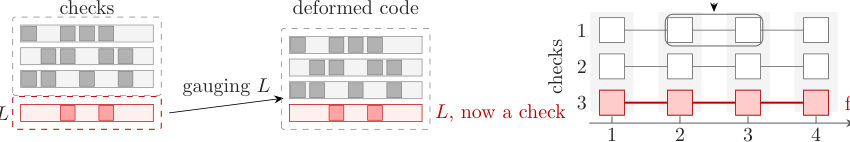
<figcaption class="paper-figure-caption"><b>Fig 1.</b> FIG. 1. The object and the two components of the fault distance of a gauged logical measurement, the fewest qubits a fault must touch to pass the checks unseen and still flip the readout. The upper row draws the object, the auxiliary graph, and a cut of it; the lower row its two components. (a) The auxiliary graph, one vertex per qubit in the support of the logical operator L, the qubits L acts on, and one ancilla on each edge. Each vertex carries a Gauss law, the product of the Pauli X on that vertex with the X on every edge meeting it; the marked vertex with its two incident edges is one such law, and the laws multiply to L. (b) A cut of the same graph into S and Sc, the two edges it...</figcaption>
</figure>
<figure class="paper-figure-card">
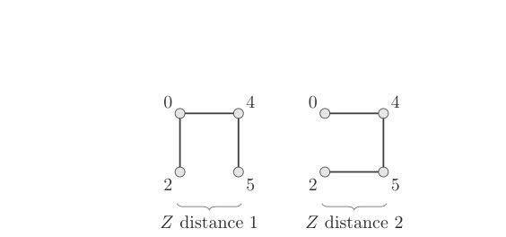
<figcaption class="paper-figure-caption"><b>Fig 2.</b> FIG. 2. The expansion condition does not decide the out- come. The same four support qubits, on the same code and the same measured logical operator, carry auxiliary graphs that share two edges and differ in the third, which runs along a different side of the drawn square in each, and the num- bers label the support qubits. Both are four-vertex paths, so the condition takes the same value in the two cases, and the deformed codes have Z-side distances, the distances of the Z-type logical operators they leave behind, of one and two, left to right. Measuring an X-type operator moves the Z side because each edge adds a new qubit, and one whose Z-check column is identically zero carries a...</figcaption>
</figure>
<figure class="paper-figure-card">
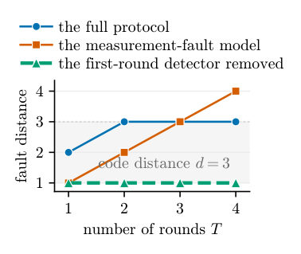
<figcaption class="paper-figure-caption"><b>Fig 3.</b> FIG. 3. Deleting the boundary detector, the comparison that anchors the circuit’s first round, holds the fault distance at one, for every round count: the dashed curve stays flat while the two curves that keep it climb. Fault distance against the number of rounds T, for the transversal measurement of the Bacon–Shor [[9, 1, 3]] code, nine physical qubits, one logical qubit and distance three. Distance is the least weight of a fault that fires no detector and still flips the logical readout; the dotted line is the code distance, the least weight of an un- detectable logical operator, here d = 3, and the shaded band between the flat curve and that line is the margin the bound- ary detector...</figcaption>
</figure>
<figure class="paper-figure-card">
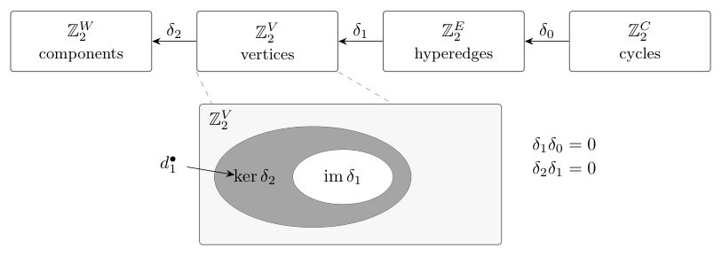
<figcaption class="paper-figure-caption"><b>Fig 4.</b> FIG. 4. The 1-cosystolic distance is the weight of the lightest vector in the shaded sliver, the set difference between two subspaces drawn in the same space. The picture is the four-term complex of the auxiliary hypergraph of Ref. [17], the object on which the scope of Section VI is stated. The four spaces, left to right, are a chosen grouping of the hypergraph’s vertices into components, the vertices themselves, the hyperedges, and the cycles, the closed chains of hyperedges, and the three maps between them are fixed by the incidence relations between those spaces: δ2 takes vertices to components, δ1 takes hyperedges to vertices, and δ0 takes cycles to hyperedges, and the two compositions...</figcaption>
</figure>
</div>

<p><strong>Summary.</strong> This paper rigorously analyzes the overhead and necessary assumptions (side conditions) required to guarantee fault tolerance in quantum computation via gauged logical measurements. It demonstrates that these conditions are not equally important, providing a 'pricing' mechanism for design choices. This work refines the theoretical understanding of error correction by pinpointing which assumptions are essential for maintaining computational integrity.</p>
<p><strong>Why it may be interesting.</strong> While highly abstract, the rigorous quantification of necessary assumptions in fault tolerance provides a blueprint for designing robust quantum protocols, which is foundational to quantum information science.</p>
<details>
<summary>Detailed structure</summary>
<p><strong>Main problem.</strong> The paper determines the precise cost associated with various side conditions required for a fault-tolerant gauged logical measurement in quantum computation.</p>
<p><strong>Main result.</strong> The authors show that the four necessary side conditions are not equally costly; dropping the requirement that the first and last rounds are perfect causes the fault distance to collapse significantly.</p>
<p><strong>Method.</strong> The analysis uses graph theory, algebraic topology (e.g., 1-cosystolic distance), and rigorous proof assistants to analyze the structure of error detection checks.</p>
<p><strong>Model / system.</strong> The model is quantum computation employing logical measurements, which are implemented by 'gauging' a global logical operator into local parity checks using an auxiliary graph built on the measured qubits.</p>
<p><strong>Key observables.</strong> Fault-tolerance distance (spatial and temporal components), weight of undetectable faults, and the status of four side conditions (C1-C4).</p>
<p><strong>Important parameters / regimes.</strong> Code distance, number of rounds ($T$), and the structure of the auxiliary graph.</p>
<p><strong>Assumptions / limitations.</strong> The initial guarantee rests on four side conditions; the analysis critically examines which of these assumptions are truly necessary for the fault-tolerance bound.</p>
<p><strong>Figures summary.</strong> Figures illustrate the auxiliary graph, cuts on the graph, and the two components of the fault distance: spatial checks (deformed code) and temporal checks (round comparison).</p>
<p><strong>Paper structure.</strong> The paper systematically analyzes the fault-tolerance guarantee, deriving bounds based on graph cuts and temporal comparisons, culminating in a detailed 'axiom audit' to price the necessity of each side condition.</p>
</details>
<details>
<summary>Abstract</summary>
<p>A logical measurement reads out protected information, and the noise it survives sets how much a quantum computation can absorb. Gauging builds one from a graph on the measured qubits, one extra qubit on each edge, turning a global operator into local parity checks. Its tolerance splits in two: the distance of the code left behind, and the rounds a fault can hide in. Williamson and Yoder proved both components stay at or above the code's distance. The guarantee rests on four side conditions taken as a package, none of them priced. Here we show they are not worth the same: the demand that the first and last rounds be perfect, which reads like bookkeeping, carries the temporal part. Dropping it flattens the fault distance, the least weight of a fault that passes unseen and flips the readout, to one for every code and round count, in a model whose detectors compare adjacent rounds; the full protocol collapses on the instance measured. The expansion condition, that no small set of qubits be sealed off, does not decide the outcome: two paths on the same qubits, both outside the covered regime, give distances one and two. The round count is tight where comparing rounds is the whole rule; the full protocol reaches the distance a round early. Both components are computed exactly on a gauged bivariate bicycle code and a Bacon--Shor measurement, inside a proof assistant. Threshold estimates consume such numbers; side conditions can be priced.</p>
</details>
<p><sub><a href="#top">↑ back to top</a></sub></p>

<p><a id="paper-2610.04090"></a></p>
<h3 id="fluctuation-theorems-and-exact-multi-allele-fixation-probabilities"><a href="http://arxiv.org/abs/2610.04090v1">Fluctuation theorems and exact multi-allele fixation probabilities</a></h3>
<p><strong>Authors:</strong> Emil A. Yuzbashyan, Alexander Feigel, Alexandre V. Morozov<br>
<strong>Type:</strong> theory · <strong>Category:</strong> statistical mechanics · <strong>PDF:</strong> <a href="https://arxiv.org/pdf/2610.04090v1">https://arxiv.org/pdf/2610.04090v1</a><br>
<strong>Analysis basis:</strong> full PDF text, analyzed in chunks
<strong>Topic relevance:</strong> <code>Keldysh / 2PI / non-Gaussian methods</code> <strong>2/5</strong> · <code>methods for driven-dissipative</code> <strong>2/5</strong> · <code>non-equilibrium universality</code> <strong>2/5</strong> · <code>analog quantum simulation</code> <strong>1/5</strong> · <code>correlated / nonlocal dissipation</code> <strong>1/5</strong> · <code>driven-dissipative phase transition</code> <strong>1/5</strong> · <code>quantum measurements</code> <strong>1/5</strong></p>
<div class="figure-strip-hint">↔ Scroll figures horizontally</div>
<div class="paper-figures-scroll">
<figure class="paper-figure-card">
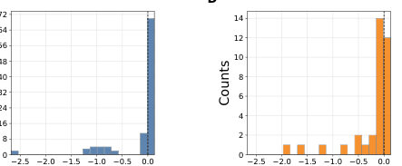
<figcaption class="paper-figure-caption"><b>Fig 1.</b> Figure 2 Fixation probabilities and the fluctuation theorem constraint. A: A contour plot of the fixation probabilities P1,S fix of allele 1 in a three-allele system (M = 3). The fixation prob- abilities were computed using Eq. (76) with kmax = 36. As in Fig. 1, s1 and s2 selection coefficients were scanned over 10 equidistant values in the [0.00, 0.02] range, resulting in 102 unique combinations. The initial allele frequencies are given by xi 0 = 1/3, ∀i; the population size is N = 100. B: Same as (A), but for the fixation probabilities P2,S fix of al- lele 2. C: A histogram of the fluctuation theorem constraint, F(P1 fix, P2 fix; s1, s2; x1 0, x2 0) −1 (cf. Eq. (62)), for the 100 sets of...</figcaption>
</figure>
<figure class="paper-figure-card">
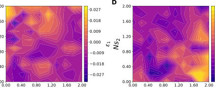
<figcaption class="paper-figure-caption"><b>Fig 2.</b> Figure 1 Comparison of the series expansion and Wright- Fisher fixation probabilities in a three-allele system (M = 3). Both s1 and s2 selection coefficients were scanned over 10 equidistant values in the [0.00, 0.02] range, resulting in 102</figcaption>
</figure>
<figure class="paper-figure-card">

<figcaption class="paper-figure-caption"><b>Fig 3.</b> Fig. 2A,B shows the heat maps of fixation probabilities P1,S fix and P2,S fix in the M = 3 system (same data as in Fig. 1). These fixation probabilities satisfy the fluctuation theorem in Eq. (62) within numerical precision (Fig. 2C). The fluctuation theorem is also satisfied by the series expansion fixation probabilities for M = 5, 10, 20 that were used in Fig. S2 (Fig. 2D). Taken together, these observations provide an independent verification of the fluctuation theorem constraint.</figcaption>
</figure>
<figure class="paper-figure-card">
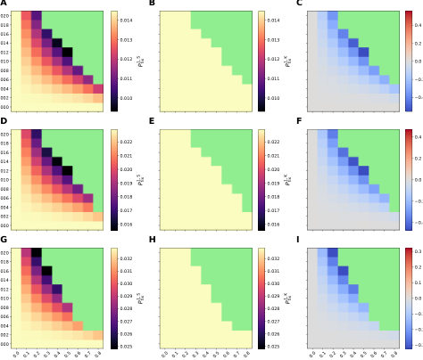
<figcaption class="paper-figure-caption"><b>Fig 4.</b> Figure 4 Fixation probabilities of a beneficial target mu- tation in the presence of interfering beneficial and dele- terious mutations with zero mean. Fixation probabilities P1,S fix of the target mutation with the selection coefficient s1 were computed using Eq. (76) with kmax = 36. Kimura fixation probabilities P1,K fix were computed using Eq. (105) with ¯sbkg = 0. The initial allele frequencies were set to (x1 0, x2 0, x3 0) = (1/N, (1 −1/N)q, (1 −1/N)(1 −q)). The cor- responding selection coefficients are (s1 −sl, sh −sl, 0) = (s1 + qsh/(1 −q), sh/(1 −q), 0); the population size is N = 100. Panels (A),(D),(G) show heatmaps of P1,S fix as a function of q and sh, for s1 = (0.004, 0.010,...</figcaption>
</figure>
<figure class="paper-figure-card">
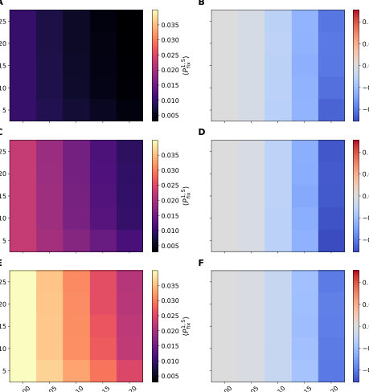
<figcaption class="paper-figure-caption"><b>Fig 5.</b> Figure 3 Fixation probabilities of the target mutation in the presence of interfering beneficial mutations. Fixation proba- bilities of the target mutation with the selection coefficient s1, P1,S fix , were computed using Eq. (76) with kmax = 36, for 5 sys- tems with M = {5, 10, 15, 20, 25}. The initial allele frequencies were set to x1 0 = 1/N, xi 0 = (1 −1/N)/(M −1), i = 2, . . . , M; the population size is N = 100. For each value of M, se- lection coefficients s2, . . . , sM−1 were uniformly sampled in the [0.00, Smax) range, with sM = 0.0 as required by our formalism. For each combination of M and Smax, the P1,S fix values in panels (A), (C), (E) were averaged over 100 inde- pendently...</figcaption>
</figure>
</div>

<p><strong>Summary.</strong> This work develops an exact, analytical framework for calculating the fixation probability of beneficial mutations in populations with multiple competing alleles. By employing fluctuation theorems, the authors solve the multi-dimensional fixation probability problem, providing a rigorous alternative to standard mean-field approximations used in evolutionary modeling.</p>
<p><strong>Why it may be interesting.</strong> While focused on biology, the mathematical machinery—using fluctuation theorems to constrain solutions to complex stochastic differential equations (Fokker-Planck/Langevin)—is highly relevant to non-equilibrium statistical mechanics problems in AMO physics and open quantum systems.</p>
<details>
<summary>Detailed structure</summary>
<p><strong>Main problem.</strong> The paper addresses the complex mathematical problem of determining the fixation probability of a mutant gene in finite populations, especially when multiple competing alleles are present (clonal interference).</p>
<p><strong>Main result.</strong> The authors derive a recursive analytical solution for the multi-allele fixation probability problem using fluctuation theorems, showing substantial deviations from mean-field approximations in clonal interference scenarios.</p>
<p><strong>Method.</strong> The methodology combines the use of fluctuation theorems (exact equalities from non-equilibrium statistical mechanics) with solving multi-dimensional backward Kolmogorov equations, validated against stochastic simulations.</p>
<p><strong>Model / system.</strong> The model is population genetics, tracking genotype frequencies $x_i$ on a simplex $\Sigma^{M-1}$. Dynamics are governed by selection, mutation, and genetic drift, described by Fokker-Planck or Langevin equations.</p>
<p><strong>Key observables.</strong> Fixation probabilities ($P_{fix}$), relative errors ($\varepsilon$), and the equilibrium distribution $P_{eq}(x)$.</p>
<p><strong>Important parameters / regimes.</strong> Population size ($N$), number of alleles ($M$), selection coefficients ($s_i$), and mutation rates ($\mu$).</p>
<p><strong>Assumptions / limitations.</strong> The derivation relies on the framework of fluctuation theorems and involves comparing exact solutions against mean-field approximations and numerical simulations.</p>
<p><strong>Figures summary.</strong> Figures compare series expansion results against Langevin and Wright-Fisher simulations for various numbers of alleles and selection coefficient regimes, demonstrating quantitative agreement.</p>
<p><strong>Paper structure.</strong> The paper builds from re-deriving Kimura's formula using fluctuation theorems, extending this to a multi-allele framework, deriving a recursive analytical solution, and finally applying it to study clonal interference and comparing results against numerical benchmarks.</p>
</details>
<details>
<summary>Abstract</summary>
<p>A mutant gene that appears in a finite population will, in the long run, either disappear from it or become fixed, so that all members of the population will carry a copy of the mutant gene. Determining the fixation probability of a mutant gene is thus a prerequisite for modeling evolutionary dynamics in finite populations. Within the diffusion theory framework, the mutant's competition with the wild-type genes is described by the closed-form solution of a one-dimensional backward Kolmogorov equation for the mutant fixation probability, derived by Motoo Kimura in 1962. However, in asexual populations the rate of adaptation and the relative importance of alternative evolutionary pathways are shaped by clonal interference - the competition between several lineages arising from distinct beneficial or deleterious mutations. Quantitative descriptions of clonal interference require computing fixation probabilities in populations where multiple alleles are present simultaneously - a formidable mathematical problem which amounts to solving a multi-dimensional backward Kolmogorov equation. Here, we employ fluctuation theorems (a set of exact equalities in non-equilibrium statistical mechanics) in order to re-derive Kimura's fixation probability formula. When extended to multi-allele systems, fluctuation theorems provide a constraint which must be satisfied by any valid set of fixation probabilities. Moreover, we present a recursive analytical solution of the multi-allele fixation probability problem. We use our formalism to study the fate of a novel beneficial mutation in a clonal interference scenario, discovering substantial deviations between our exact treatment and the mean-field approximation in which the target mutation competes with a single effective genotype. Our formalism can be used to replace both explicit simulations and approximate analytical results in models of asexual evolution.</p>
</details>
<p><sub><a href="#top">↑ back to top</a></sub></p>

<p><a id="paper-2610.03870"></a></p>
<h3 id="time-dependent-integrable-quantum-field-theories-with-dynamical-boundaries"><a href="http://arxiv.org/abs/2610.03870v1">Time-dependent integrable quantum field theories with dynamical boundaries</a></h3>
<p><strong>Authors:</strong> Pradip Kattel<br>
<strong>Type:</strong> theory · <strong>Category:</strong> strongly correlated electrons · <strong>PDF:</strong> <a href="https://arxiv.org/pdf/2610.03870v1">https://arxiv.org/pdf/2610.03870v1</a><br>
<strong>Analysis basis:</strong> full PDF text, analyzed in chunks
<strong>Topic relevance:</strong> <code>Keldysh / 2PI / non-Gaussian methods</code> <strong>2/5</strong> · <code>methods for driven-dissipative</code> <strong>2/5</strong> · <code>analog quantum simulation</code> <strong>1/5</strong> · <code>correlated / nonlocal dissipation</code> <strong>1/5</strong> · <code>driven-dissipative phase transition</code> <strong>1/5</strong> · <code>non-equilibrium universality</code> <strong>1/5</strong> · <code>quantum measurements</code> <strong>1/5</strong></p>
<div class="figure-strip-hint">↔ Scroll figures horizontally</div>
<div class="paper-figures-scroll">
<figure class="paper-figure-card">
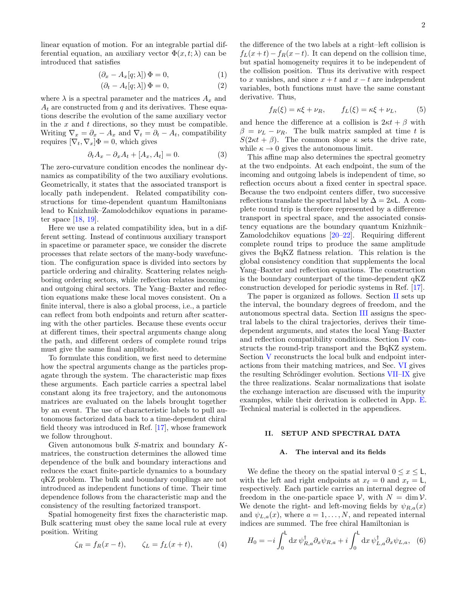
<figcaption class="paper-figure-caption"><b>Fig 1.</b> Low-resolution page preview, page 2</figcaption>
</figure>
<figure class="paper-figure-card">
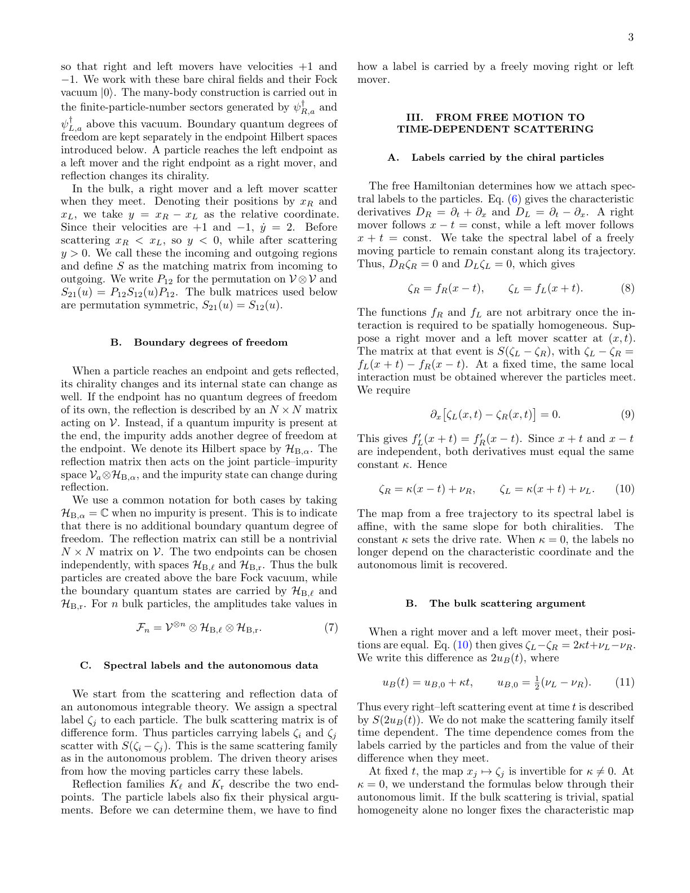
<figcaption class="paper-figure-caption"><b>Fig 2.</b> Low-resolution page preview, page 3</figcaption>
</figure>
<figure class="paper-figure-card">
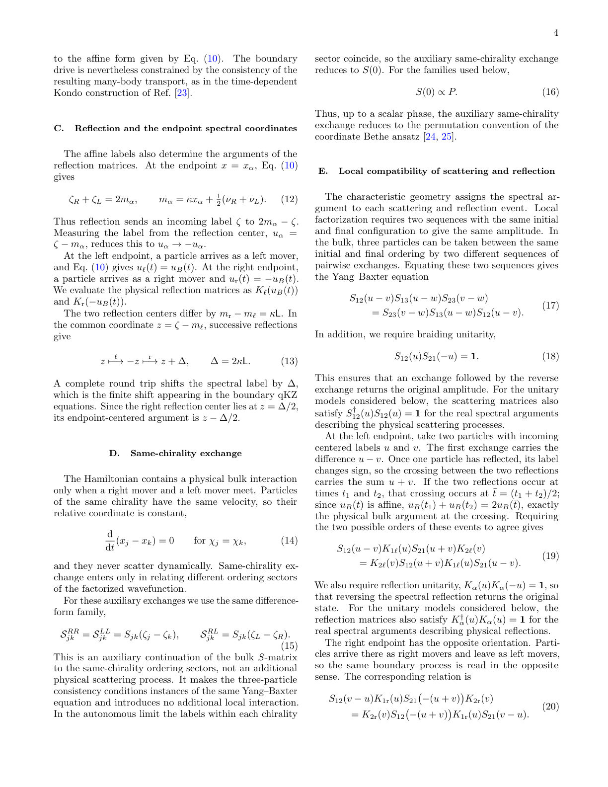
<figcaption class="paper-figure-caption"><b>Fig 3.</b> Low-resolution page preview, page 4</figcaption>
</figure>
<figure class="paper-figure-card">
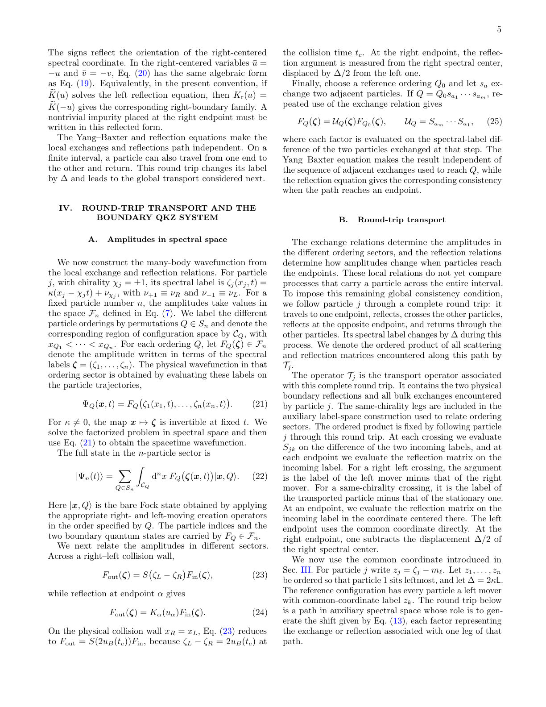
<figcaption class="paper-figure-caption"><b>Fig 4.</b> Low-resolution page preview, page 5</figcaption>
</figure>
<figure class="paper-figure-card">
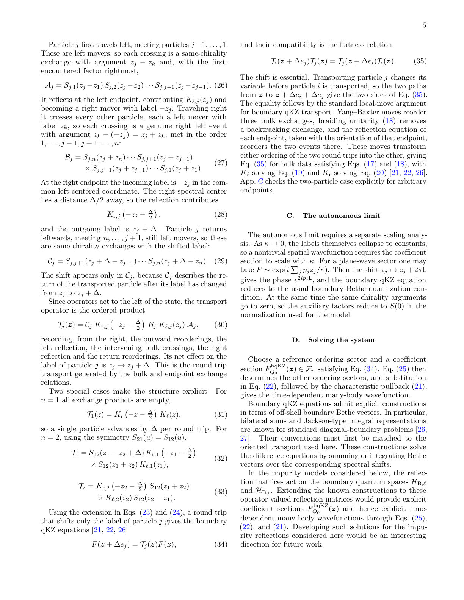
<figcaption class="paper-figure-caption"><b>Fig 5.</b> Low-resolution page preview, page 6</figcaption>
</figure>
</div>

<p><strong>Summary.</strong> This work constructs time-dependent integrable quantum field theories on a finite interval by demanding consistency between bulk scattering and boundary reflections. The core finding is that the time dependence is governed by a single affine spectral coordinate, leading to the boundary quantum Knizhnik-Zamolodchikov equations. This provides a powerful, mathematically rigorous tool for modeling driven quantum systems with boundaries.</p>
<p><strong>Why it may be interesting.</strong> The rigorous mathematical framework connecting integrable field theory structures (like QKZ/BqKZ) to time-dependent boundary dynamics is highly relevant for understanding open quantum systems where boundary effects or impurities drive the dynamics.</p>
<details>
<summary>Detailed structure</summary>
<p><strong>Main problem.</strong> The paper develops a method to construct time-dependent integrable chiral quantum field theories defined on a finite spatial interval with dynamical boundaries.</p>
<p><strong>Main result.</strong> The time dependence of the bulk and boundary drives is constrained by a single common affine spectral coordinate, leading to the boundary quantum Knizhnik-Zamolodchikov (BqKZ) equations.</p>
<p><strong>Method.</strong> The construction relies on matching conditions derived from scattering and reflection data, ensuring consistency via the Yang-Baxter and reflection equations.</p>
<p><strong>Model / system.</strong> The system involves chiral quantum fields ($\psi_R, \psi_L$) on a finite interval $[0, L]$, incorporating time-dependent bulk and boundary interactions, exemplified by rational SU(N) and O(3) impurity models.</p>
<p><strong>Key observables.</strong> The time-dependent many-body wavefunction, the boundary coupling, and the spectral labels carried by particles.</p>
<p><strong>Important parameters / regimes.</strong> The drive rate $\kappa$, the boundary length $L$, and the spectral labels $\zeta_R, \zeta_L$.</p>
<p><strong>Assumptions / limitations.</strong> The theory assumes the existence of an underlying autonomous integrable model whose scattering/reflection data dictates the time evolution, and that the map from free trajectories to spectral labels is affine.</p>
<p><strong>Paper structure.</strong> The paper proceeds by establishing the affine structure of spectral labels from free propagation, enforcing consistency via the Yang-Baxter and reflection equations, deriving the BqKZ equations from round-trip consistency, and finally reconstructing the local Hamiltonian from matching problems.</p>
</details>
<details>
<summary>Abstract</summary>
<p>We present a method for constructing time-dependent integrable chiral quantum field theories on a finite spatial interval from the scattering and reflection data of an autonomous integrable model. Each particle carries a spectral label that is constant along its free trajectory. Requiring a right--left scattering event at a fixed time to be independent of its position forces the map from characteristic coordinates to spectral labels to be affine, with the same slope for both chiralities. As a result, all bulk scattering events at a given time sample one common spectral argument, and the two boundary reflections sample the corresponding endpoint arguments. The bulk and boundary drives are not independent time-dependent deformations: their time dependence is fixed by the same affine spectral coordinate. Successive reflections at the two endpoints translate the spectral label by a finite amount. Following a particle through a complete round trip then produces a difference transport whose consistency gives the boundary quantum Knizhnik--Zamolodchikov equations. The Yang--Baxter and reflection equations ensure local compatibility, while BqKZ flatness ensures compatibility of complete round trips. We then reconstruct the local Hamiltonian by inverting the one- and two-particle matching problems. The bulk matrix fixes the contact interaction, while the reflection matrix fixes the corresponding boundary coupling. The same autonomous factorized data determine the boundary qKZ transport problem and the local driven Hamiltonian. Once the boundary qKZ system is solved, its characteristic pullback gives the corresponding time-dependent many-body wavefunction. We illustrate the construction with rational $SU(N)$ models and an $O(3)$-invariant model with dynamical boundary impurities, obtaining driven Kondo interactions whose couplings are fixed by the same affine spectral coordinate.</p>
</details>
<p><sub><a href="#top">↑ back to top</a></sub></p>

<p><a id="paper-2610.05953"></a></p>
<h3 id="fast-mixing-of-the-syk-model-at-high-temperatures"><a href="http://arxiv.org/abs/2610.05953v1">Fast mixing of the SYK model at high temperatures</a></h3>
<p><strong>Authors:</strong> Yiyi Cai, Yongtao Zhan, Alexander Zlokapa<br>
<strong>Type:</strong> theory · <strong>Category:</strong> disordered systems and neural networks · <strong>PDF:</strong> <a href="https://arxiv.org/pdf/2610.05953v1">https://arxiv.org/pdf/2610.05953v1</a><br>
<strong>Analysis basis:</strong> full PDF text, analyzed in chunks
<strong>Topic relevance:</strong> <code>Keldysh / 2PI / non-Gaussian methods</code> <strong>2/5</strong> · <code>methods for driven-dissipative</code> <strong>2/5</strong> · <code>correlated / nonlocal dissipation</code> <strong>1/5</strong> · <code>driven-dissipative phase transition</code> <strong>1/5</strong> · <code>non-equilibrium universality</code> <strong>1/5</strong> · <code>scars &amp; prethermalization</code> <strong>1/5</strong></p>
<div class="figure-strip-hint">↔ Scroll figures horizontally</div>
<div class="paper-figures-scroll">
<figure class="paper-figure-card">
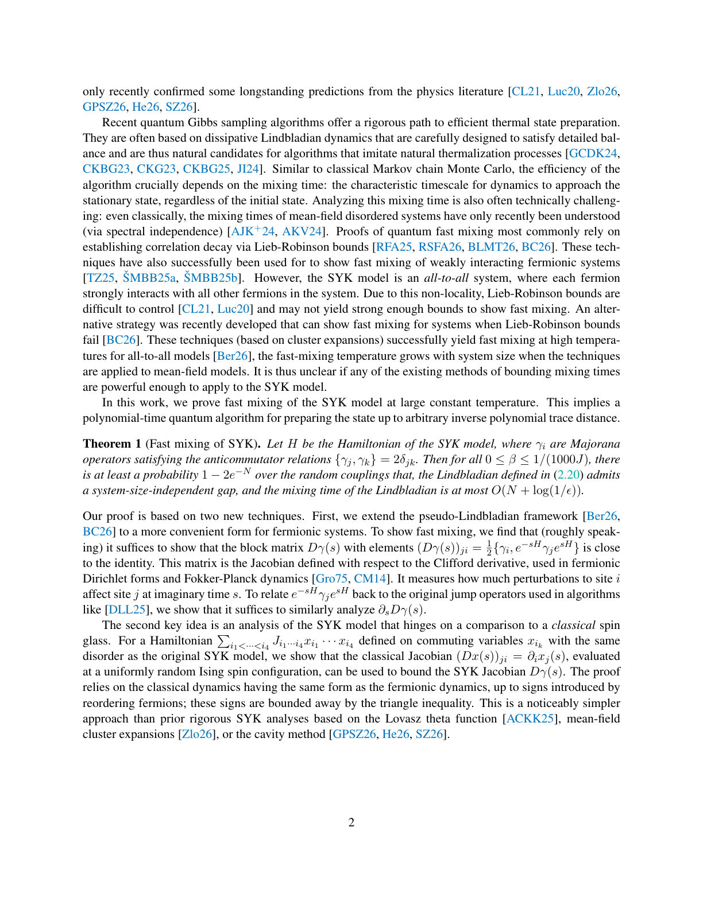
<figcaption class="paper-figure-caption"><b>Fig 1.</b> Low-resolution page preview, page 2</figcaption>
</figure>
<figure class="paper-figure-card">
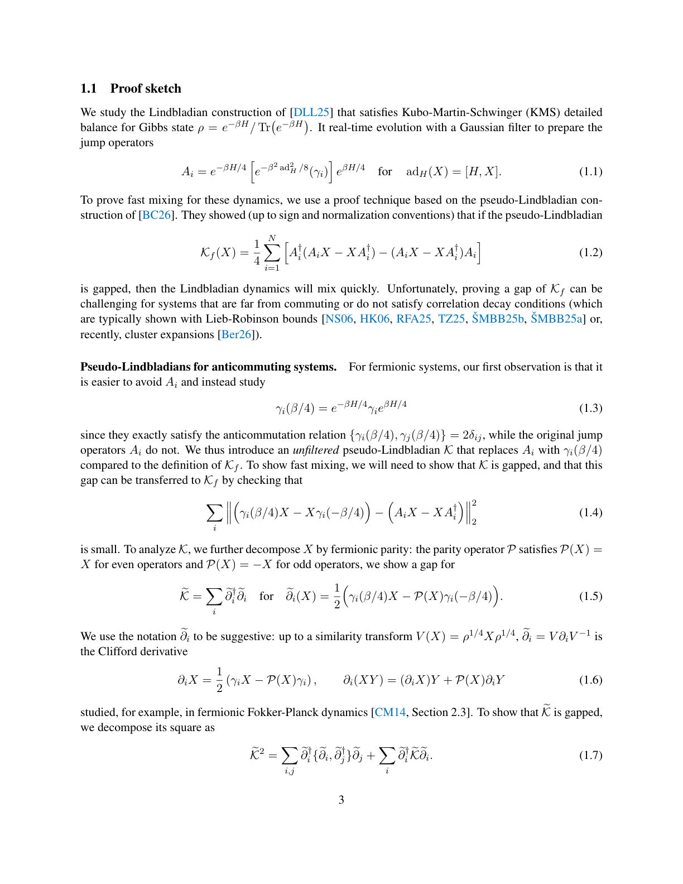
<figcaption class="paper-figure-caption"><b>Fig 2.</b> Low-resolution page preview, page 3</figcaption>
</figure>
<figure class="paper-figure-card">
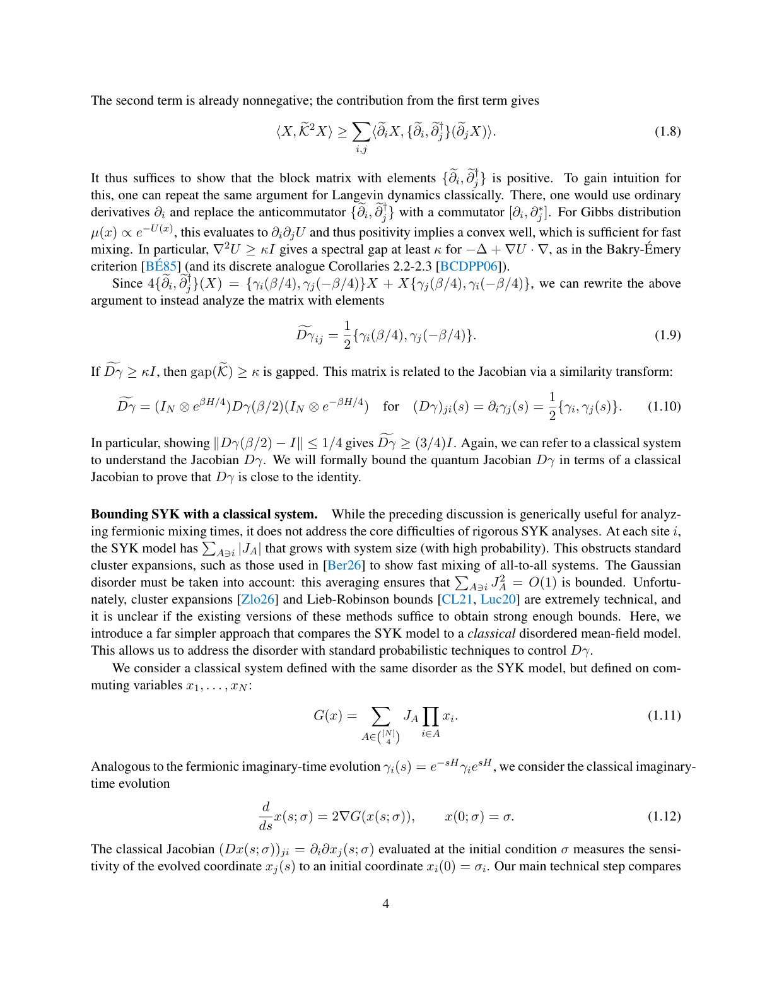
<figcaption class="paper-figure-caption"><b>Fig 3.</b> Low-resolution page preview, page 4</figcaption>
</figure>
<figure class="paper-figure-card">
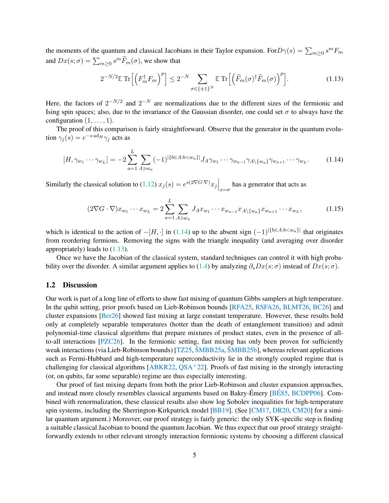
<figcaption class="paper-figure-caption"><b>Fig 4.</b> Low-resolution page preview, page 5</figcaption>
</figure>
<figure class="paper-figure-card">
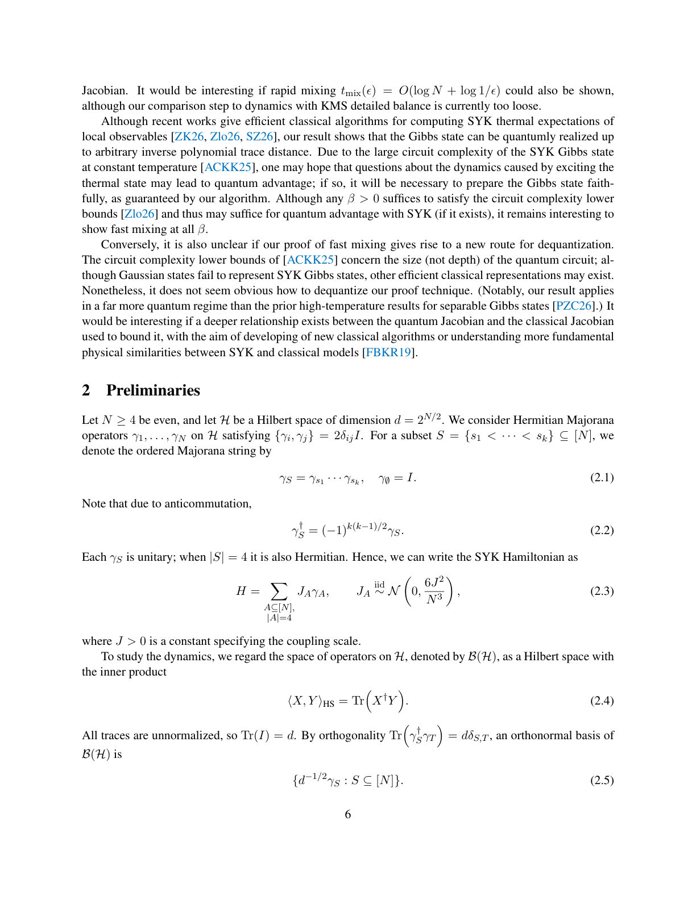
<figcaption class="paper-figure-caption"><b>Fig 5.</b> Low-resolution page preview, page 6</figcaption>
</figure>
</div>

<p><strong>Summary.</strong> This work rigorously proves that the highly interacting SYK model exhibits fast thermalization at high temperatures. By comparing the quantum evolution dynamics to a simpler classical mean-field model, the authors establish a spectral gap, which guarantees that the model's equilibrium state can be prepared efficiently on a quantum computer.</p>
<p><strong>Why it may be interesting.</strong> The rigorous proof of fast thermalization in a complex, strongly interacting model like SYK, using techniques that bridge quantum dynamics to classical mean-field theory, is highly relevant for understanding quantum thermalization dynamics.</p>
<details>
<summary>Detailed structure</summary>
<p><strong>Main problem.</strong> The paper aims to prove the fast mixing of the Sachdev-Ye-Kitaev (SYK) model at high temperatures to establish a polynomial-time quantum algorithm for preparing its Gibbs states.</p>
<p><strong>Main result.</strong> The authors prove fast mixing with high probability over the disorder, implying that the SYK Gibbs state can be prepared in polynomial time on a quantum computer up to arbitrary inverse polynomial trace distance.</p>
<p><strong>Method.</strong> The proof employs a pseudo-Lindbladian approach for fermions and crucially compares the quantum Jacobian of the dynamics to a classical Jacobian derived from a commuting variable mean-field model.</p>
<p><strong>Model / system.</strong> The system is the Sachdev-Ye-Kitaev (SYK) model, a strongly interacting fermionic system characterized by an all-to-all quartic interaction Hamiltonian involving Majorana fermions. The dynamics are analyzed via a Lindbladian construction satisfying KMS detailed balance.</p>
<p><strong>Key observables.</strong> Spectral Gap, Quantum and Classical Jacobians ($D_\gamma$ and $D_x$), and the mixing time $t_{	ext{mix}}(\epsilon)$.</p>
<p><strong>Important parameters / regimes.</strong> High constant temperature regime ($eta \le 1/(1000J)$), system size $N$, and disorder strength $J$.</p>
<p><strong>Assumptions / limitations.</strong> The analysis relies on bounding the quantum Jacobian by a classical one, and the mathematical rigor involves advanced tools like Banach's theorem and Borell-TIS inequalities.</p>
<p><strong>Paper structure.</strong> The paper develops the analysis by first defining the quantum and classical dynamics, then establishing the core comparison between their respective Jacobians, and finally using advanced concentration inequalities to bound the required norms.</p>
</details>
<details>
<summary>Abstract</summary>
<p>The Sachdev-Ye-Kitaev (SYK) model is a strongly interacting fermionic system. Its dynamics are difficult to analyze with Lieb-Robinson bounds and cluster expansions due to its all-to-all disordered interactions. We prove that, with high probability over the disorder, the SYK model admits a quantum Gibbs sampler with a system-size-independent spectral gap at sufficiently high constant temperatures. This yields polynomial-time preparation of SYK Gibbs states on a quantum computer. While prior non-rigorous computations that suggested SYK thermalization were limited to studying local correlators, we emphasize that our result holds up to arbitrary inverse polynomial trace distance. Our proof introduces the pseudo-Lindbladian approach to fermions and uses an especially simple SYK analysis based on a comparison to classical dynamics.</p>
</details>
<p><sub><a href="#top">↑ back to top</a></sub></p>

<p><a id="paper-2610.04619"></a></p>
<h3 id="mutaco-simulator-efficient-response-matching-in-stochastic-nonlinear-systems-via-compatibility-aware-sequential-design"><a href="http://arxiv.org/abs/2610.04619v1">MUTACO: Simulator-Efficient Response Matching in Stochastic Nonlinear Systems via Compatibility-Aware Sequential Design</a></h3>
<p><strong>Authors:</strong> Ege Karadeniz, İlter Onat Korkmaz, Umut Can Turhan, Cem Tekin, Aydın Cem Keser<br>
<strong>Type:</strong> theory · <strong>Category:</strong> statistical mechanics · <strong>PDF:</strong> <a href="https://arxiv.org/pdf/2610.04619v1">https://arxiv.org/pdf/2610.04619v1</a><br>
<strong>Analysis basis:</strong> full PDF text, analyzed in chunks
<strong>Topic relevance:</strong> <code>analog quantum simulation</code> <strong>2/5</strong> · <code>methods for driven-dissipative</code> <strong>2/5</strong> · <code>Keldysh / 2PI / non-Gaussian methods</code> <strong>1/5</strong> · <code>driven-dissipative phase transition</code> <strong>1/5</strong> · <code>non-equilibrium universality</code> <strong>1/5</strong> · <code>quantum measurements</code> <strong>1/5</strong></p>
<div class="figure-strip-hint">↔ Scroll figures horizontally</div>
<div class="paper-figures-scroll">
<figure class="paper-figure-card">
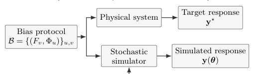
<figcaption class="paper-figure-caption"><b>Fig 1.</b> FIG. 1. Simulator-mediated inverse problem. A common con- trolled bias protocol is applied to the physical system and the stochastic simulator. The ensemble parameters θ determine the simulated macroscopic response y(θ), which is compared with the prescribed target response y⋆. Distinct parameter configurations may satisfy the response-matching objective. See main text for further definitions.</figcaption>
</figure>
<figure class="paper-figure-card">
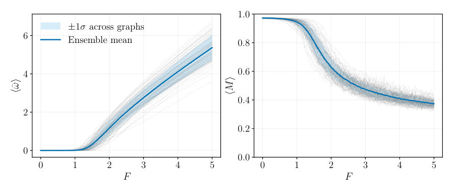
<figcaption class="paper-figure-caption"><b>Fig 2.</b> FIG. 2. Forward response of the coupled network of N = 10 stochastic oscillators for the ensemble-parameter configuration θ⋆= (µW , µK, µA, CVK) = (1.91, 1.12, 1.16, 0.88), at simulation temperature T = 0.15 and phase-bias setting Φ = 0. Here, µW , µK, and µA denote the ensemble means of the restoring strength, pairwise coupling, and bias scale, respectively, while CVK denotes the coefficient of variation of the coupling strength. This response provides the illustrative target reconstructed in Fig. 3. (a) Mean angular velocity ⟨¯ω⟩and (b) time-averaged Kuramoto order-parameter magnitude ⟨M⟩as functions of the driving force F. Faint gray traces show 80 disorder realizations, each averaged...</figcaption>
</figure>
<figure class="paper-figure-card">
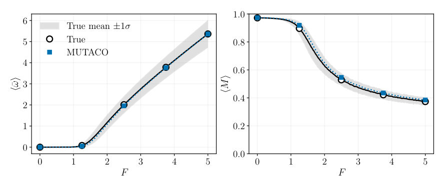
<figcaption class="paper-figure-caption"><b>Fig 3.</b> FIG. 3. MUTACO reconstruction for the illustrative benchmark instance introduced in Fig. 2, at phase-bias setting Φ = 0. (a) Mean angular velocity ⟨¯ω⟩and (b) time-averaged Kuramoto order-parameter magnitude ⟨M⟩as functions of the driving force F. The black curve reproduces the target response shown in Fig. 2, while the blue curve is the response obtained from the simulator at the B = 40 MUTACO recommendation bθ = (1.95, 1.18, 1.13, 0.41), with parameter ordering defined in Eq. (10). The gray band denotes the ±1σ variability of the target response across 80 disorder realizations, each averaged over two independent stochastic repeats. Markers indicate the five driving-force values F = 0,...</figcaption>
</figure>
<figure class="paper-figure-card">
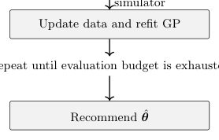
<figcaption class="paper-figure-caption"><b>Fig 4.</b> FIG. 5. Flowchart of the MUTACO target-matching search. After an initial design is used to fit the GP surrogate, se- quential candidates are selected through either compatibility- guided barrier refinement or uncertainty-driven exploration. Each selected candidate is evaluated with the stochastic simu- lator and the surrogate is updated until the evaluation budget is exhausted, after which the final parameter configuration ˆθ is recommended. See the main text and Appendix B 4 for details.</figcaption>
</figure>
<figure class="paper-figure-card">
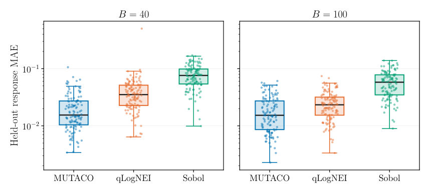
<figcaption class="paper-figure-caption"><b>Fig 5.</b> FIG. 6. Held-out physical response error, defined in Eq. (31), across the 120-target benchmark cohort at simulation budgets B = 40 and B = 100. MUTACO is compared with scalar qLogNEI and nonadaptive scrambled-Sobol search. Each point corresponds to one of the 120 frozen target instances. The response error is the component-mean absolute difference between the held-out simulated response at the recommended parameter vector and the prescribed target response. Lower values indicate better response reconstruction. Boxes show the interquartile range with the median indicated by the central line. Whiskers extend to the most extreme observations within 1.5 times the interquartile range, and all...</figcaption>
</figure>
</div>

<p><strong>Summary.</strong> This paper introduces MUTACO, a novel, uncertainty-aware sequential design method for solving inverse problems in stochastic nonlinear systems. It infers underlying statistical parameters by matching predicted macroscopic responses to target responses, requiring only noisy forward simulations. The results show MUTACO is highly simulator-efficient, proving that response-matching is a robust approach for complex physical modeling.</p>
<p><strong>Why it may be interesting.</strong> While focused on classical stochastic dynamics, the core methodology—using Gaussian Processes and uncertainty quantification to efficiently explore parameter spaces based on observable responses—is highly relevant to parameter estimation in complex, non-linear quantum systems where direct simulation is costly.</p>
<details>
<summary>Detailed structure</summary>
<p><strong>Main problem.</strong> The paper addresses inverse problems in nonlinear dynamical systems where the forward dynamics are governed by expensive stochastic simulators and gradients are unavailable.</p>
<p><strong>Main result.</strong> The proposed MUTACO method achieves the lowest held-out response error compared to other adaptive search and inference methods, demonstrating the efficiency of response-targeted sequential design.</p>
<p><strong>Method.</strong> MUTACO is an uncertainty-aware sequential-design method that builds a correlated multitask Gaussian-process surrogate to learn the full response vector and its predictive uncertainty.</p>
<p><strong>Model / system.</strong> The study is applied to a disordered network of stochastic nonlinear phase oscillators, which is a minimal phenomenological model extending Kuramoto-type coupling with local potentials and disorder.</p>
<p><strong>Key observables.</strong> Macroscopic rotation and synchronization curves (the response vector $\mathbf{y}$), and the final held-out physical response error.</p>
<p><strong>Important parameters / regimes.</strong> Ensemble parameters $\theta$ (e.g., means and variances of local potentials and couplings), and the simulation budget.</p>
<p><strong>Assumptions / limitations.</strong> The formulation is appropriate when experimentally accessible observables characterize ensemble statistics rather than a single microscopic realization.</p>
<p><strong>Figures summary.</strong> Figure 1 illustrates the general inverse problem setup ($\mathbf{y}(\hat{\theta}) \approx \mathbf{y}^\*$). Other figures compare the performance of MUTACO against other methods in terms of response error.</p>
<p><strong>Paper structure.</strong> The paper introduces the problem, details the stochastic oscillator model and the inverse task, presents the MUTACO methodology, compares its performance against state-of-the-art methods under limited simulation budgets, and concludes with implications for response-targeted inference.</p>
</details>
<details>
<summary>Abstract</summary>
<p>Many physical inverse problems are mediated by expensive stochastic simulators for which response gradients, adjoint sensitivities, or a differentiable simulator interface are unavailable. We introduce Multiple Target-based Confident Acquisition (MUTACO), an uncertainty-aware sequential-design method for response matching that requires only noisy forward evaluations and learns the multicomponent response together with its predictive uncertainty. We develop and evaluate MUTACO for a disordered network of stochastic phase oscillators. The inverse task is to infer statistical properties of the local potential and interactions from macroscopic rotation and synchronization curves under multiple driving conditions. Rather than requiring unique recovery of these statistical properties, MUTACO searches for parameter configurations whose predicted rotation and synchronization responses are compatible with the target response while accounting for predictive uncertainty. This response-centered formulation is appropriate when experimentally accessible observables characterize ensemble statistics rather than a particular microscopic realization. Under strictly limited simulation budgets, MUTACO achieves the lowest held-out response error among the tested adaptive-search, space-filling, and simulation-based inference methods, while also yielding lower parameter-recovery error than the compared methods. These results demonstrate that response-targeted sequential design is a simulator-efficient approach to inverse modeling from finite noisy forward evaluations and suggest broader applicability to stochastic physical systems with correlated multicomponent responses and weakly constrained parameter directions.</p>
</details>
<p><sub><a href="#top">↑ back to top</a></sub></p>

<p><a id="paper-2610.05175"></a></p>
<h3 id="unveiling-high-energy-ultrafast-responses-driven-by-fermi-level-gap-opening-in-charge-density-waves"><a href="http://arxiv.org/abs/2610.05175v1">Unveiling High-Energy Ultrafast Responses Driven by Fermi-Level Gap Opening in Charge-Density Waves</a></h3>
<p><strong>Authors:</strong> Qiong Wu, Tianchen Hu, Junhan Huang, Yongjie Liu, Fei Sun, Shuxiang Xu, Li Yue, Zijian Lin, Xinyu Zhou, Tao Dong, Nan-Lin Wang<br>
<strong>Type:</strong> experiment · <strong>Category:</strong> strongly correlated electrons · <strong>PDF:</strong> <a href="https://arxiv.org/pdf/2610.05175v1">https://arxiv.org/pdf/2610.05175v1</a><br>
<strong>Analysis basis:</strong> full PDF text, analyzed in chunks
<strong>Topic relevance:</strong> <code>Keldysh / 2PI / non-Gaussian methods</code> <strong>2/5</strong> · <code>methods for driven-dissipative</code> <strong>2/5</strong> · <code>Frenkel-Kontorova</code> <strong>1/5</strong> · <code>driven-dissipative phase transition</code> <strong>1/5</strong> · <code>non-equilibrium universality</code> <strong>1/5</strong> · <code>scars &amp; prethermalization</code> <strong>1/5</strong></p>
<div class="figure-strip-hint">↔ Scroll figures horizontally</div>
<div class="paper-figures-scroll">
<figure class="paper-figure-card">
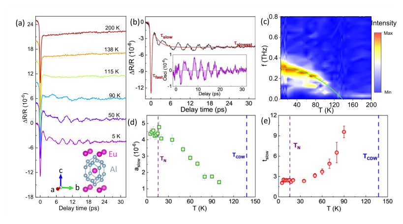
<figcaption class="paper-figure-caption"><b>Fig 1.</b> FIG. 1. The temperature-dependent ultrafast relaxation dynamics of EuAl4. (a) Ultrafast dynamics at several typical temperature points, showing the temperature dependence of oscillations and a positive component. The data are vertically offset for clarity. The inset illustrates the crystal structure of EuAl4. (b) Fitting of the 5K data using the convolution of a three-exponential function with uniform Gaussian function. The inset shows the pure oscillatory component remaining after subtracting the fitted background. (c) Two-dimensional color map of the Fast Fourier transition of pure oscillation, showing tendency of frequency softening; the green curve is guide to the eyes. Temperature...</figcaption>
</figure>
<figure class="paper-figure-card">
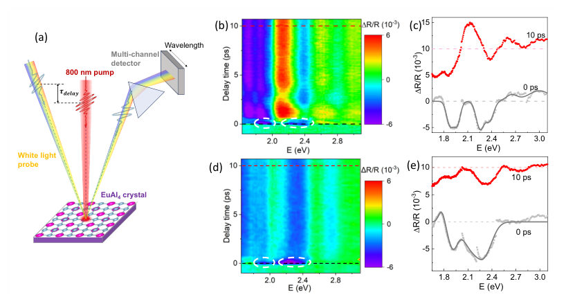
<figcaption class="paper-figure-caption"><b>Fig 2.</b> FIG. 2. Broadband transient differential reflectivity spectra of EuAl4 in the CDW and normal state. (a) Configuration of broadband reflectance measurement. The probe beam is broadband white light, which can be separated into different wavelengths through diffraction or refraction after reflection. By measuring the pump and no-pump light intensities at various positions of a multi-channel detector, one can obtain the transient reflectivity as a function of probe wavelength (or equivalently, energy) and delay time. (b) Two-dimensional color map of the ∆R/R spectrum at 20 K. The two dashed white circles highlight the short-lived features at 0 ps. (c) ∆R/R spectra at delay times of 0 ps and 10...</figcaption>
</figure>
<figure class="paper-figure-card">
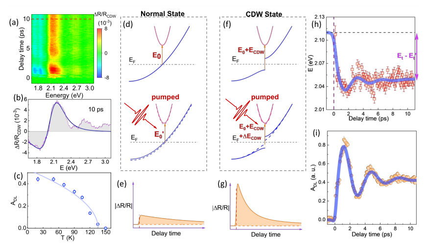
<figcaption class="paper-figure-caption"><b>Fig 3.</b> FIG. 3. The CDW-specified interband transition suppressed by ultrafast laser. (a) The difference in broadband transient response between 20 K and 150 K, named as ∆R/RCDW . (b) ∆R/RCDW spectra at 10 ps, where the blue curve is fitting result with Eq. (3). (c) The amplitude parameter ADL extracted from ∆R/RCDW at different low temperatures, and</figcaption>
</figure>
<figure class="paper-figure-card">
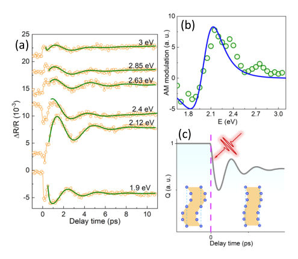
<figcaption class="paper-figure-caption"><b>Fig 4.</b> FIG. 4. The AM modulated reflectance. (a) The ∆R/R time traces at selected probe energy. The AM oscillations can be clearly seen, which shows significantly energy dependence. The green curves are waveform fitting to extract the AM am- plitude. (b) Energy dependence of AM modulation on re- flectance, which are obtained from fitting shown in panel (a). The blue curve is the DL line shape used in Fig. 3(b). (c) Schematic illustration of the time evolution of the normal co- ordinate of the CDW mode Q. The bottom inset depicts the CDW distortion before and after photoexcitation, highlight- ing the transient suppression of the ordered state.</figcaption>
</figure>
</div>

<p><strong>Summary.</strong> This experiment uses ultrafast pump-probe spectroscopy on the CDW material EuAl4 to investigate how the opening and modulation of the CDW gap affect high-energy electronic transitions. The key finding is that the low-energy order parameter dynamics directly modulate the high-energy spectral response, manifesting as a characteristic dip-hump feature. This establishes a general principle for interpreting transient signals in gapped correlated quantum materials.</p>
<p><strong>Why it may be interesting.</strong> This work is highly relevant as it bridges low-energy collective excitations (CDW gap dynamics) to high-energy optical spectroscopy, providing a general framework for interpreting transient signals in gapped correlated materials, which is key for understanding non-equilibrium quantum states.</p>
<details>
<summary>Detailed structure</summary>
<p><strong>Main problem.</strong> The study aims to understand how the opening of a small gap near the Fermi surface, characteristic of Charge-Density Wave (CDW) formation, influences high-energy interband spectral changes during ultrafast dynamics.</p>
<p><strong>Main result.</strong> The research establishes a direct link showing that the low-energy dynamics of the CDW order parameter cause a substantial, measurable modulation of high-energy spectral features, specifically observed as a dip-hump lineshape near 2 eV.</p>
<p><strong>Method.</strong> The primary method employed is ultrafast pump-probe spectroscopy, measuring transient reflectivity ($\Delta R/R$) across a broad energy range using intense femtosecond laser pulses.</p>
<p><strong>Model / system.</strong> The physical system studied is the prototype CDW material, EuAl4. The analysis involves modeling the relaxation dynamics using convolved triple-exponential functions and fitting spectral features with derivative Lorentzian (DL) functions.</p>
<p><strong>Key observables.</strong> Transient reflectivity ($\Delta R/R(\omega, t)$), energy-dependent dip-hump lineshape around 2 eV, and the temperature-dependent amplitude of the CDW gap modulation.</p>
<p><strong>Important parameters / regimes.</strong> Temperature (e.g., 5 K vs 150 K), the CDW gap energy, and the characteristic relaxation timescales ($   au_i$).</p>
<p><strong>Assumptions / limitations.</strong> The analysis assumes that broadband probing is sufficient to capture the full energy-dependent spectral fingerprint, and that the observed features are governed by the modulation of the CDW gap.</p>
<p><strong>Figures summary.</strong> Figures illustrate temperature-dependent ultrafast relaxation dynamics, showing oscillations and slow component changes. Another figure compares broadband transient differential reflectivity spectra ($\Delta R/R$) between the CDW state and the normal state, highlighting spectral features at different time delays.</p>
<p><strong>Paper structure.</strong> The paper systematically analyzes the time-resolved $\Delta R/R$ spectra, first establishing the temperature dependence of relaxation components, then focusing on the energy-dependent spectral features associated with the gap edge, and finally linking these high-energy responses to the low-energy order-parameter dynamics.</p>
</details>
<details>
<summary>Abstract</summary>
<p>Ultrafast pump-probe spectroscopy is indispensable for investigating interactions, collective excitations, and nonequilibrium dynamics in superconductors and correlated electron systems. However, how a small gap opening near Fermi surface affects the spectral changes in the high-energy interband transition region remains elusive. To address this issue, we perform systematic studies of carrier relaxation dynamics in the prototype charge-density-wave (CDW) material EuAl4. We find that the CDW gap shrinks substantially under optical pumping. This band renormalization strongly modulates interband transitions associated with the gap edge, inducing a pronounced transient reflectivity change at the corresponding probe energies. These results establish a direct link between low-energy order-parameter dynamics and high-energy spectral responses, providing a general framework for interpreting transient signals in gapped quantum materials.</p>
</details>
<p><sub><a href="#top">↑ back to top</a></sub></p>

<p><a id="paper-2610.04107"></a></p>
<h3 id="pycc-a-reference-quantum-chemistry-python-package-for-education-validation-and-rapid-prototyping"><a href="http://arxiv.org/abs/2610.04107v1">PyCC: A Reference Quantum Chemistry Python Package for Education, Validation, and Rapid Prototyping</a></h3>
<p><strong>Authors:</strong> T. Daniel Crawford, Benjamin G. Peyton, Zhe Wang, Aparna Krishnan, Brendan M. Shumberger, Jose Madriaga, Joshua Atta-Kumi, Aaron De Clercq, Ritvik Prabhu<br>
<strong>Type:</strong> theory · <strong>Category:</strong> other · <strong>PDF:</strong> <a href="https://arxiv.org/pdf/2610.04107v1">https://arxiv.org/pdf/2610.04107v1</a><br>
<strong>Analysis basis:</strong> full PDF text, analyzed in chunks
<strong>Topic relevance:</strong> <code>Keldysh / 2PI / non-Gaussian methods</code> <strong>2/5</strong> · <code>analog quantum simulation</code> <strong>2/5</strong> · <code>methods for driven-dissipative</code> <strong>2/5</strong> · <code>quantum measurements</code> <strong>1/5</strong></p>
<div class="figure-strip-hint">↔ Scroll figures horizontally</div>
<div class="paper-figures-scroll">
<figure class="paper-figure-card">
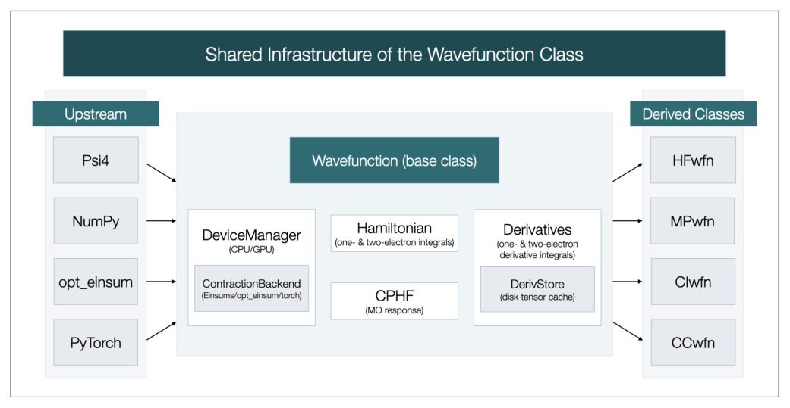
<figcaption class="paper-figure-caption"><b>Fig 1.</b> FIG. 1. Wavefunction base class overview. In addition to common components described in the text, such as the reference wave function, the Wavefunction object creates and uses several helper classes including a DeviceManager for selecting CPU/GPU, arithmetic precision, and tensor-contraction handling (ContractionBackend) a Hamiltonian/SpinOrbitalHamiltonian object for molecular integrals and other quantities, Derivatives and DerivStore objects for lazy construction and storage of derivative integrals and wave function parameters, and a CPHF object for handling orbital response to external perturbations. Upstream packages such as Psi4 and NumPy provide essential data or tools, while derived...</figcaption>
</figure>
<figure class="paper-figure-card">
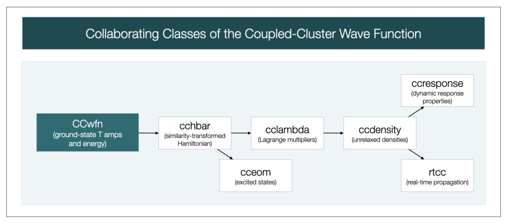
<figcaption class="paper-figure-caption"><b>Fig 2.</b> FIG. 2. Collaborating classes of CCwfn, including the similarity-transformed Hamiltonian (cchbar), the ground-state Lagrange multipliers (cclambda), electronically excited states (cceom), the ground-state one- and two-electron densities (ccdensity), dynamic response functions (ccresponse), and real-time coupled cluster propagation (rtcc).</figcaption>
</figure>
<figure class="paper-figure-card">
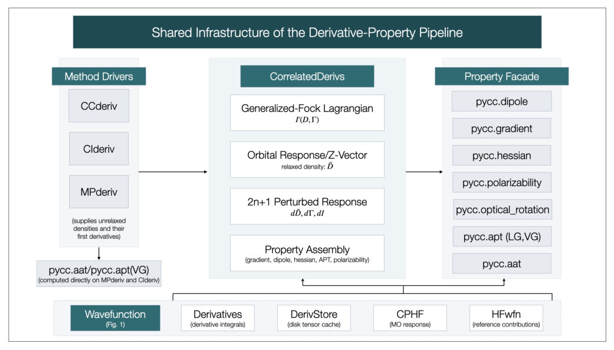
<figcaption class="paper-figure-caption"><b>Fig 3.</b> FIG. 3. Derivative-Property Pipeline: Method-specific classes (CCderiv, MPderiv, and CIderiv) provide unperturbed and perturbed densities to the CorrelatedDerivs class, which computes the required first- and/or second-derivatives of the energy for a given property. For properties such as AATs, VG-APTs, and DBOCs, which are not formulated as energy derivatives, method-specific functions are provided</figcaption>
</figure>
</div>

<p><strong>Summary.</strong> This paper introduces PyCC, a new open-source Python package for quantum chemistry, designed to be a reference tool for testing and teaching complex electronic structure methods like Coupled Cluster. It provides a vast array of calculated properties, including derivatives and response functions, by employing a highly modular and extensible software architecture. PyCC aims to lower the barrier to entry for developing and validating advanced quantum chemical algorithms.</p>
<p><strong>Why it may be interesting.</strong> While focused on general quantum chemistry, the emphasis on analytic derivatives, response functions, and the structure for rapid prototyping of complex many-body calculations is highly relevant for developing advanced theoretical tools in AMO physics.</p>
<details>
<summary>Detailed structure</summary>
<p><strong>Main problem.</strong> The core challenge addressed is the inherent complexity of developing highly optimized, validated software for wave-function-based quantum chemistry methods like Coupled Cluster theory.</p>
<p><strong>Main result.</strong> The authors introduce PyCC, a comprehensive, open-source Python package designed to serve as a reference implementation, validation suite, and educational tool for quantum chemistry calculations.</p>
<p><strong>Method.</strong> The package implements various electronic structure methods (CC, MP2, CI) using a modular, method-agnostic structure built around a shared Wavefunction base and a derivative layer.</p>
<p><strong>Model / system.</strong> The package models quantum chemical systems using single-determinant references (closed- and open-shell) and handles calculations in both spatial and spin-orbital formalisms.</p>
<p><strong>Key observables.</strong> Energy gradients, Hessians, polarizabilities (static and dynamic), Atomic Polar Tensors (APT), Atomic Axial Tensors (AAT), and excitation energies.</p>
<p><strong>Important parameters / regimes.</strong> The package supports calculations up to CC3 and includes capabilities for real-time CC propagation and local correlation methods.</p>
<p><strong>Assumptions / limitations.</strong> The structure assumes that a new method can inherit the full property set by supplying its reduced densities and their first-order responses.</p>
<p><strong>Figures summary.</strong> A summary table (Table I) details the availability of various analytic derivative properties across different quantum chemical methods and references.</p>
<p><strong>Paper structure.</strong> The paper describes the package's architecture, detailing components like the Wavefunction base, DeviceManager, Hamiltonian, and CPHF solver, emphasizing modularity and efficiency through lazy loading and persistent storage.</p>
</details>
<details>
<summary>Abstract</summary>
<p>PyCC is a Python-based quantum chemistry package that emphasizes coupled cluster and related methods. Developed over the last five years, PyCC's purpose is to provide a clear reference implementation that will serve as a validation suite for production code, a platform for rapid prototyping and testing of new methods, and an educational resource for newcomers to the field. The package covers both closed- and open-shell single-determinant references in spatial- and spin-orbital formulations for the coupled cluster hierarchy through triples-including methods such as CC3, as well as for MP2 and CI methods. PyCC provides a broad range of molecular properties such as analytic first and second energy derivatives including gradients, Hessians, polarizabilities and atomic polar tensors, as well as non-energy-derivative properties, such as velocity-gauge atomic polar tensors and diagonal Born-Oppenheimer corrections, plus dynamic linear response functions, and excitation energies. The package includes a number of unique capabilities, such as real-time CC propagation (up through CC3), atomic axial tensors for simulating vibrational circular dichroism spectra at the MP2 and CI levels, and local correlation methods including perturbation-aware correlation domains. The code is designed around a shared Wavefunction base and a method-agnostic derivative layer that enables a new method to inherit the full property set once it supplies its reduced densities and their first-order responses. PyCC is fully open source and available on GitHub under the BSD 3-clause license.</p>
</details>
<p><sub><a href="#top">↑ back to top</a></sub></p>

<p><a id="paper-2610.03884"></a></p>
<h3 id="the-alps-project-release-30-open-source-software-for-strongly-correlated-systems"><a href="http://arxiv.org/abs/2610.03884v1">The ALPS project release 3.0: open source software for strongly correlated systems</a></h3>
<p><strong>Authors:</strong> F. Alet, T. Chen, A. Feiguin, E. Gull, S. Iskakov, J. P. F. LeBlanc, F. Lin, A. Mirmira, G. Möller, L. Pollet, M. Rosales, V. W. Scarola, H. Shinaoka, H. Terletska, S. Todo, M. Troyer, M. Wallerberger, P. Werner, T. M. R. Wolf<br>
<strong>Type:</strong> theory · <strong>Category:</strong> strongly correlated electrons · <strong>PDF:</strong> <a href="https://arxiv.org/pdf/2610.03884v1">https://arxiv.org/pdf/2610.03884v1</a><br>
<strong>Analysis basis:</strong> full PDF text, analyzed in chunks
<strong>Topic relevance:</strong> <code>Keldysh / 2PI / non-Gaussian methods</code> <strong>2/5</strong> · <code>analog quantum simulation</code> <strong>2/5</strong> · <code>methods for driven-dissipative</code> <strong>2/5</strong></p>
<div class="figure-strip-hint">↔ Scroll figures horizontally</div>
<div class="paper-figures-scroll">
<figure class="paper-figure-card">
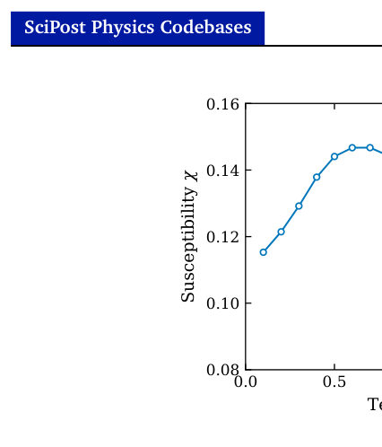
<figcaption class="paper-figure-caption"><b>Fig 1.</b> Figure 1: Uniform susceptibility χ of the S = 1/2 antiferromagnetic Heisenberg chain with L = 60 sites as a function of temperature T, obtained with the loop code using the script in Sec. 4.2. Statistical errors are smaller than the plot markers.</figcaption>
</figure>
<figure class="paper-figure-card">
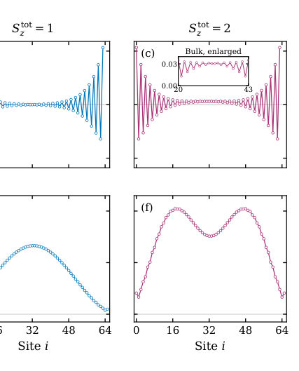
<figcaption class="paper-figure-caption"><b>Fig 2.</b> Figure 2: Local magnetization 〈Sz i 〉in the spin-1 Heisenberg chain with open bound- aries, resolved by total magnetization. (a–c) 64 spin-1 sites. In sector 0, DMRG selects an opposite-edge-polarized combination of the nearly degenerate singlet and Stot z = 0 triplet; the exact finite-chain singlet would instead have zero local magnetization. Sector 1 carries the edge excitation, while sector 2 adds a bulk magnon (inset: en- larged central region). (d–f) The same 64 spin-1 sites with two additional spin- 1</figcaption>
</figure>
<figure class="paper-figure-card">
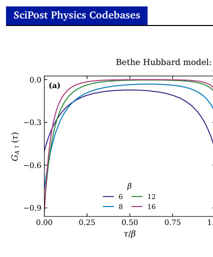
<figcaption class="paper-figure-caption"><b>Fig 3.</b> Figure 3: Antiferromagnetic DMFT for the half-filled Hubbard model on the Bethe lattice, with U = 3, t = 1/ p</figcaption>
</figure>
</div>

<p><strong>Summary.</strong> This paper announces Release 3.0 of ALPS, a comprehensive open-source software package for simulating strongly correlated quantum lattice models. It significantly modernizes the codebase, improving distribution via PyPI and Spack, and updating key algorithms like DMRG. The release aims to provide a stable, accessible platform for researchers to tackle complex problems in condensed matter physics.</p>
<p><strong>Why it may be interesting.</strong> It provides essential, state-of-the-art computational tools (DMRG, QMC, DMFT) necessary for modern research in strongly correlated materials, making it a vital resource for theorists.</p>
<details>
<summary>Detailed structure</summary>
<p><strong>Main problem.</strong> The development and maintenance of open-source software tools to simulate complex, strongly correlated quantum lattice models.</p>
<p><strong>Main result.</strong> Release 3.0 of the ALPS project provides a modernized, robust, and easily distributable software suite supporting state-of-the-art numerical techniques for these systems.</p>
<p><strong>Method.</strong> The paper describes the software infrastructure, which implements various numerical techniques like Quantum Monte Carlo (QMC), DMRG, and DMFT solvers.</p>
<p><strong>Model / system.</strong> The software targets general strongly correlated quantum lattice models, including quantum magnets, lattice bosons, and fermion systems, exemplified by the Hubbard model on the Bethe lattice.</p>
<p><strong>Key observables.</strong> Staggered moment ($m_A$), imaginary-time Green's function ($G_f(	au)$), and susceptibility are key diagnostics used in tutorials.</p>
<p><strong>Important parameters / regimes.</strong> Parameters include interaction strength ($U$), hopping ($t$), and temperature ($T$) or inverse temperature ($eta$).</p>
<p><strong>Assumptions / limitations.</strong> The software aims to provide a unified framework, but specific methods rely on approximations inherent to QMC, DMRG, or DMFT solvers.</p>
<p><strong>Figures summary.</strong> Tutorial figures illustrate the imaginary-time Green's function and the temperature dependence of the staggered moment for the Bethe Hubbard model.</p>
<p><strong>Paper structure.</strong> The paper functions as a software release announcement, detailing new features (PyPI/Spack distribution, MIT license), modernization efforts (C++17, GitHub migration), and providing tutorials on using specific advanced solvers (e.g., CT-HYB for DMFT).</p>
</details>
<details>
<summary>Abstract</summary>
<p>We present release 3.0 of the ALPS (Algorithms and Libraries for Physics Simulations) project, an open-source software project to develop libraries and application programs for the simulation of strongly correlated quantum lattice models such as quantum magnets, lattice bosons, and strongly correlated fermion systems. As in previous releases, development is centered on common data formats, on libraries to simplify and speed up code development, and on full-featured simulation programs that let non-experts carry out serial or parallel numerical simulations using the important algorithms for quantum lattice models: classical and quantum Monte Carlo (QMC) using non-local updates, extended-ensemble simulations, exact and full diagonalization (ED), the density matrix renormalization group (DMRG), and continuous-time QMC solvers for dynamical mean-field theory (DMFT). Major changes in release 3.0 include distribution of the pyalps binary through the Python Package Index (pip install pyalps) and through Spack for HPC systems; migration of development to GitHub with continuous integration and automated testing; relicensing of the package under the permissive MIT license; a rebuilt documentation and tutorial website, including a set of Jupyter-notebook tutorials and localized content; a broad modernization of the C++ codebase (C++17 compliance, Boost and NumPy 2.0 compatibility, and warning and dead-code cleanup) together with a major DMRG update and associated reliability and build-compatibility fixes; the removal of legacy components (the VisTrails provenance integration and the TEBD, MPS, and directed-worm-algorithm application codes); archival of release 3.0.0 with a Zenodo DOI (10.5281/zenodo.22775899); and a formal governance and sustainability model developed under the US National Science Foundation (NSF) POSE program. The software is available at https://alps.comp-phys.org.</p>
</details>
<p><sub><a href="#top">↑ back to top</a></sub></p>

<p><a id="paper-2610.05152"></a></p>
<h3 id="the-diffusive-spectral-gap-of-the-qubit-eswap-chain"><a href="http://arxiv.org/abs/2610.05152v1">The diffusive spectral gap of the qubit eSWAP chain</a></h3>
<p><strong>Authors:</strong> Yanying Liang, Haoran Zhu<br>
<strong>Type:</strong> theory · <strong>Category:</strong> quantum information and computing · <strong>PDF:</strong> <a href="https://arxiv.org/pdf/2610.05152v1">https://arxiv.org/pdf/2610.05152v1</a><br>
<strong>Analysis basis:</strong> full PDF text, analyzed in chunks
<strong>Topic relevance:</strong> <code>analog quantum simulation</code> <strong>2/5</strong> · <code>correlated / nonlocal dissipation</code> <strong>1/5</strong> · <code>driven-dissipative phase transition</code> <strong>1/5</strong> · <code>methods for driven-dissipative</code> <strong>1/5</strong> · <code>non-equilibrium universality</code> <strong>1/5</strong></p>
<div class="figure-strip-hint">↔ Scroll figures horizontally</div>
<div class="paper-figures-scroll">
<figure class="paper-figure-card">
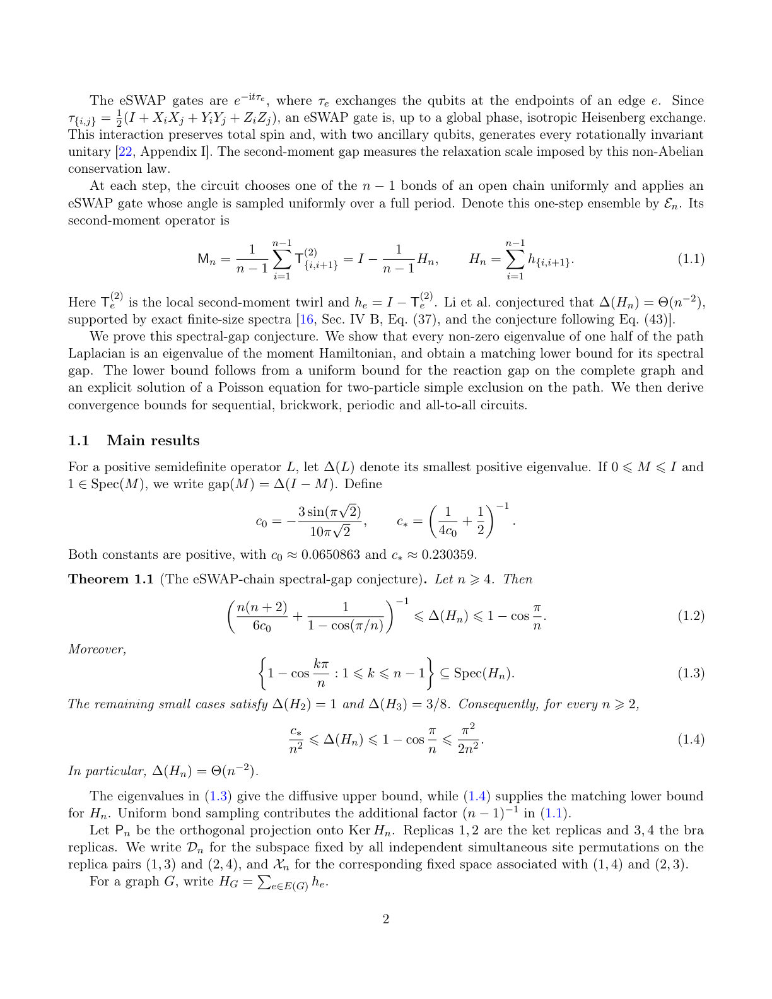
<figcaption class="paper-figure-caption"><b>Fig 1.</b> Low-resolution page preview, page 2</figcaption>
</figure>
<figure class="paper-figure-card">
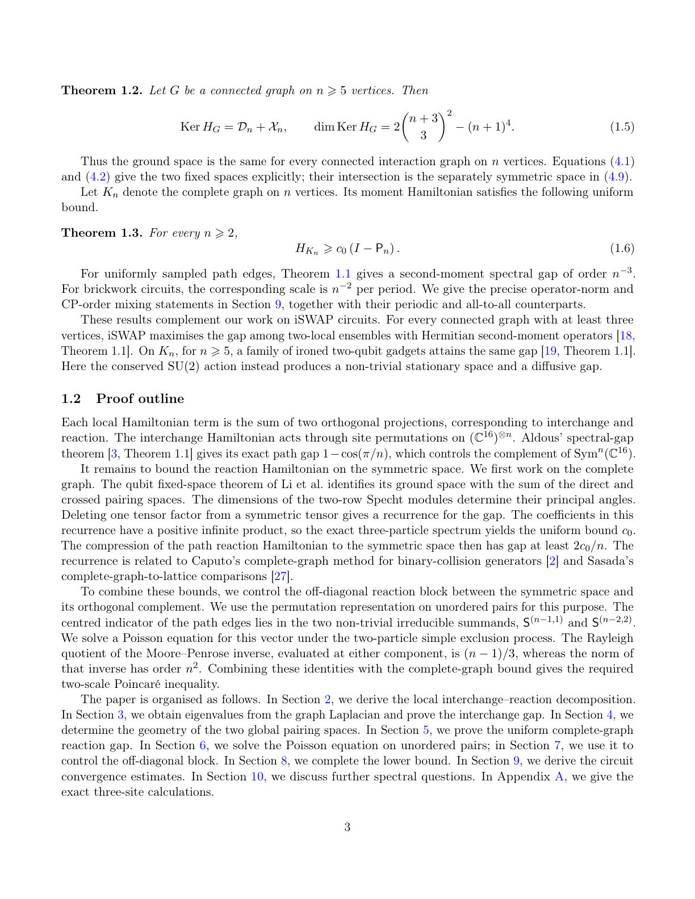
<figcaption class="paper-figure-caption"><b>Fig 2.</b> Low-resolution page preview, page 3</figcaption>
</figure>
<figure class="paper-figure-card">
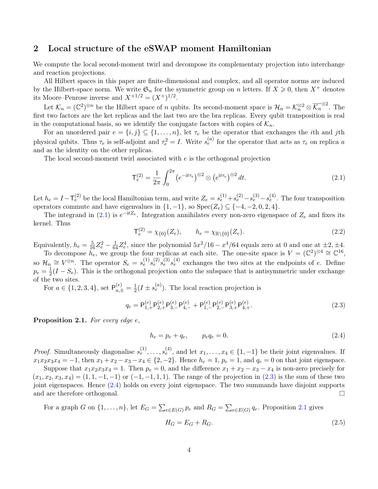
<figcaption class="paper-figure-caption"><b>Fig 3.</b> Low-resolution page preview, page 4</figcaption>
</figure>
<figure class="paper-figure-card">
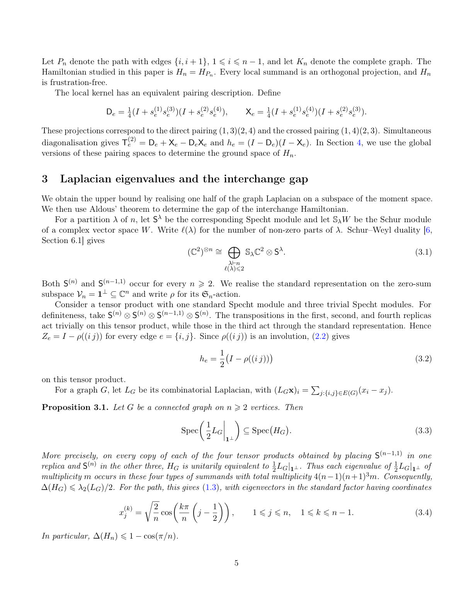
<figcaption class="paper-figure-caption"><b>Fig 4.</b> Low-resolution page preview, page 5</figcaption>
</figure>
<figure class="paper-figure-card">
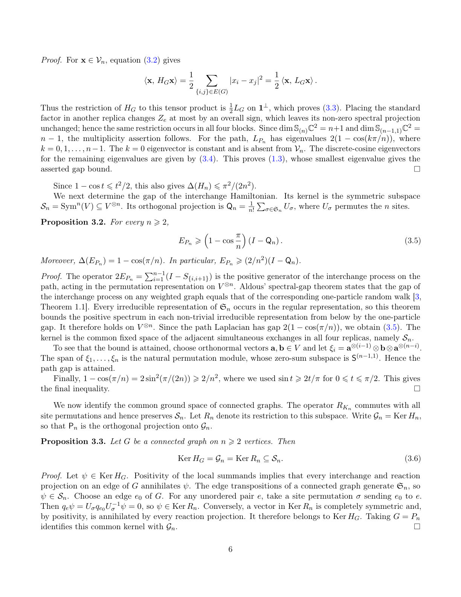
<figcaption class="paper-figure-caption"><b>Fig 5.</b> Low-resolution page preview, page 6</figcaption>
</figure>
</div>

<p><strong>Summary.</strong> This paper rigorously proves that the spectral gap of the open qubit eSWAP chain scales diffusively as $n^{-2}$, resolving an open conjecture. It characterizes the ground state space for general connected interaction graphs and applies these findings to analyze the convergence properties of quantum circuits. This is crucial for understanding the mixing time and efficiency of quantum information processing protocols.</p>
<p><strong>Why it may be interesting.</strong> The work provides rigorous spectral bounds for quantum circuits based on local interactions (eSWAP), which directly impacts the understanding of mixing times and quantum gate fidelity in quantum computation.</p>
<details>
<summary>Detailed structure</summary>
<p><strong>Main problem.</strong> The paper proves that the second-moment Hamiltonian of the open qubit eSWAP chain possesses a diffusive spectral gap, resolving a prior conjecture.</p>
<p><strong>Main result.</strong> The spectral gap $\Delta(H_n)$ for the open qubit eSWAP chain scales as $\Theta(n^{-2})$, and the ground space $    ext{Ker } H_G$ is characterized as the sum of direct and crossed pairing spaces for $n \ge 5$.</p>
<p><strong>Method.</strong> The analysis combines spectral gap estimates, utilizing techniques like Aldous' spectral-gap theorem and solving Poisson equations, alongside decomposing the Hamiltonian into interchange and reaction projections.</p>
<p><strong>Model / system.</strong> The system models an open qubit eSWAP chain on a graph $G$, governed by a Hamiltonian $H_G$ constructed from local second-moment twirl operators ($T^{(2)}$) and projections ($p_e, q_e$).</p>
<p><strong>Key observables.</strong> Spectral Gap ($\Delta(H_n)$), Ground Space ($   ext{Ker } H_G$), and the scaling behavior of these quantities.</p>
<p><strong>Important parameters / regimes.</strong> The number of qubits $n$, and the structure of the interaction graph $G$ (e.g., path, complete graph $K_n$).</p>
<p><strong>Assumptions / limitations.</strong> The analysis relies on the local interchange-reaction decomposition ($h_e = p_e + q_e$) and specific graph structures for the theorems presented.</p>
<p><strong>Paper structure.</strong> The paper proceeds by establishing the spectral gap conjecture for the eSWAP-chain Hamiltonian, characterizing the ground space for general connected graphs, and providing bounds for the complete graph case.</p>
</details>
<details>
<summary>Abstract</summary>
<p>We prove that the second-moment Hamiltonian of the open qubit eSWAP chain has a diffusive spectral gap, resolving a conjecture of Li, Zheng, Liu, Jiang, and Liu. We also characterise the ground space on every connected interaction graph with at least five vertices and prove a uniform lower bound for the unnormalised complete-graph gap. We apply these results to sequential and brickwork circuits and prove that the periodic chain also has a diffusive spectral gap.</p>
</details>
<p><sub><a href="#top">↑ back to top</a></sub></p>

<p><a id="paper-2610.04170"></a></p>
<h3 id="exact-finite-channel-schur-moments-of-the-wigner-smith-matrix-with-a-tunnel-barrier"><a href="http://arxiv.org/abs/2610.04170v1">Exact Finite-Channel Schur Moments of the Wigner-Smith Matrix with a Tunnel Barrier</a></h3>
<p><strong>Authors:</strong> Israel F. Araujo<br>
<strong>Type:</strong> theory · <strong>Category:</strong> other · <strong>PDF:</strong> <a href="https://arxiv.org/pdf/2610.04170v1">https://arxiv.org/pdf/2610.04170v1</a><br>
<strong>Analysis basis:</strong> full PDF text, analyzed in chunks
<strong>Topic relevance:</strong> <code>Keldysh / 2PI / non-Gaussian methods</code> <strong>2/5</strong> · <code>methods for driven-dissipative</code> <strong>2/5</strong></p>
<div class="figure-strip-hint">↔ Scroll figures horizontally</div>
<div class="paper-figures-scroll">
<figure class="paper-figure-card">
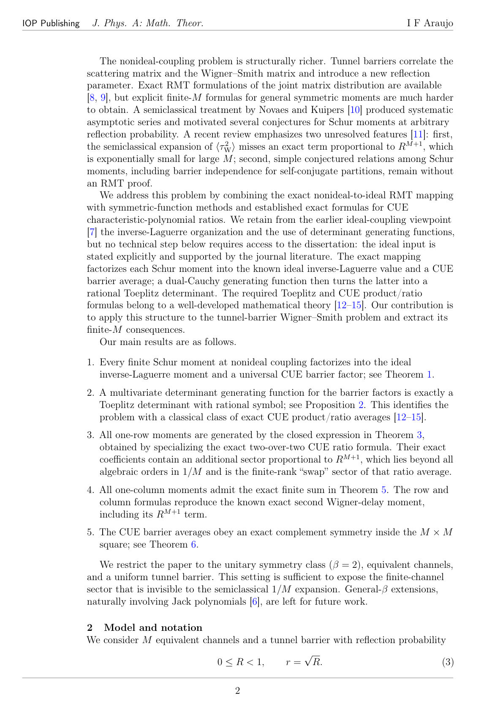
<figcaption class="paper-figure-caption"><b>Fig 1.</b> Low-resolution page preview, page 2</figcaption>
</figure>
<figure class="paper-figure-card">
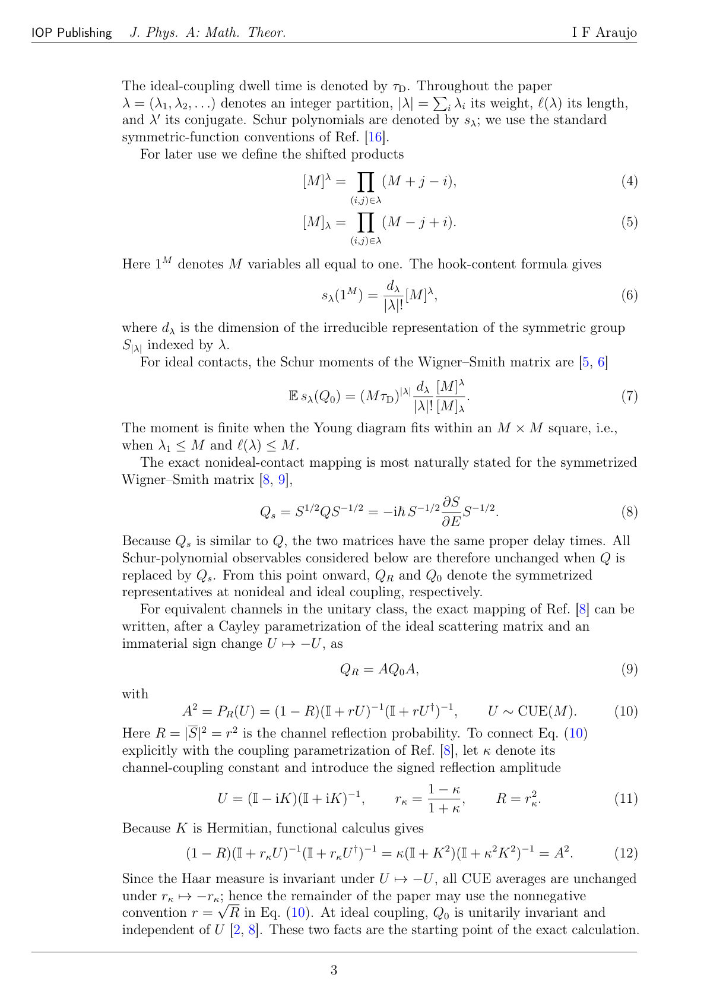
<figcaption class="paper-figure-caption"><b>Fig 2.</b> Low-resolution page preview, page 3</figcaption>
</figure>
<figure class="paper-figure-card">
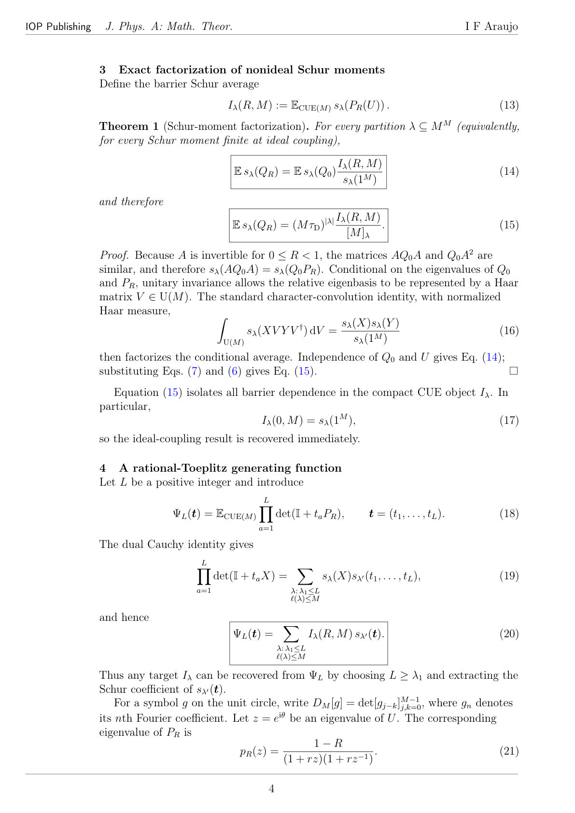
<figcaption class="paper-figure-caption"><b>Fig 3.</b> Low-resolution page preview, page 4</figcaption>
</figure>
<figure class="paper-figure-card">
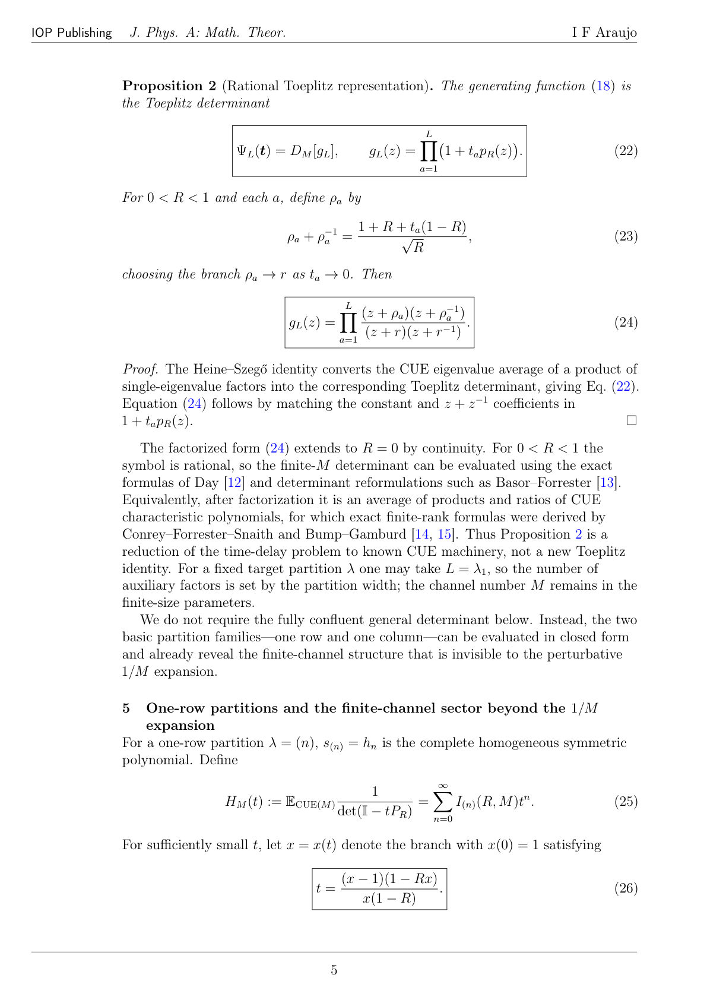
<figcaption class="paper-figure-caption"><b>Fig 4.</b> Low-resolution page preview, page 5</figcaption>
</figure>
<figure class="paper-figure-card">
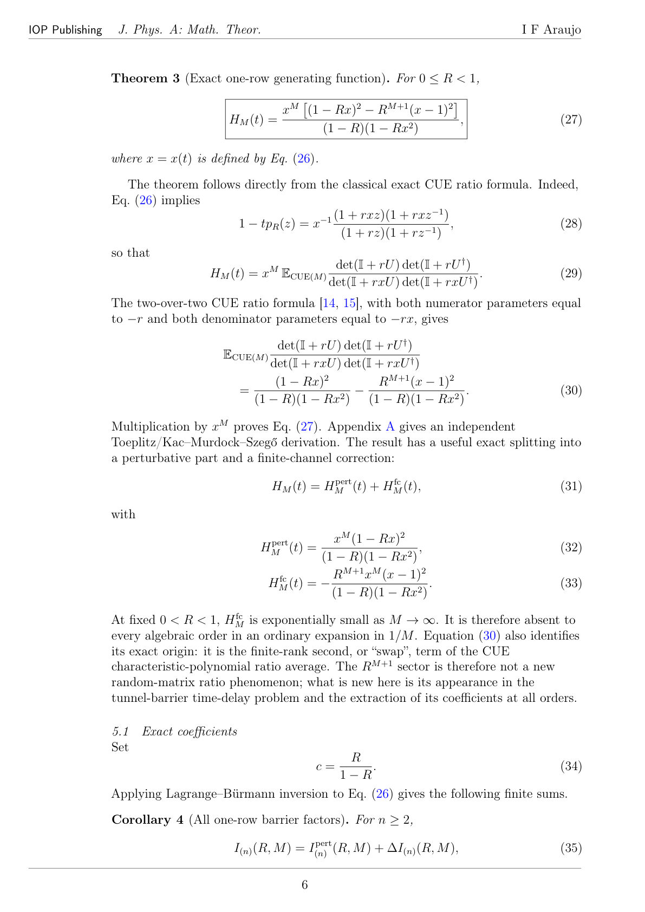
<figcaption class="paper-figure-caption"><b>Fig 5.</b> Low-resolution page preview, page 6</figcaption>
</figure>
</div>

<p><strong>Summary.</strong> This theoretical paper calculates the exact finite-channel Schur moments for the Wigner-Smith time-delay matrix in a chaotic cavity with a tunnel barrier. By mapping the problem onto known CUE determinant identities, the authors derive closed-form generating functions that reveal finite-size corrections to standard semiclassical predictions. This provides a highly precise tool for analyzing quantum transport in mesoscopic systems.</p>
<p><strong>Why it may be interesting.</strong> This work provides rigorous, exact finite-size corrections to semiclassical predictions in quantum chaos, which is crucial for understanding transport properties in mesoscopic systems where finite coupling effects dominate.</p>
<details>
<summary>Detailed structure</summary>
<p><strong>Main problem.</strong> The paper aims to derive exact, finite-channel formulas for the Schur moments of the Wigner-Smith time-delay matrix when the coupling between a chaotic cavity and the outside world is nonideal due to a tunnel barrier.</p>
<p><strong>Main result.</strong> The Schur moments are shown to factorize into a known ideal-coupling value and a universal Circular Unitary Ensemble (CUE) barrier factor, leading to closed generating functions for all finite delay-time moments up to the channel number M.</p>
<p><strong>Method.</strong> The methodology combines Random Matrix Theory (RMT) techniques, specifically using symmetric function methods and determinant-generating functions, to reduce the problem to calculating Toeplitz determinants derived from CUE averages.</p>
<p><strong>Model / system.</strong> The system modeled is a chaotic cavity with broken time-reversal symmetry coupled to $M$ open channels via a uniform tunnel barrier characterized by a reflection probability $R$. The physics is encoded in the Wigner-Smith time-delay matrix.</p>
<p><strong>Key observables.</strong> Schur moments of the Wigner-Smith matrix, $\langle s_\lambda(Q_R) 
angle$, and the Wigner time delay $    au_W$.</p>
<p><strong>Important parameters / regimes.</strong> The number of open channels ($M$), the reflection probability ($R$), and the partition index ($\lambda$).</p>
<p><strong>Assumptions / limitations.</strong> The analysis assumes the unitary symmetry class ($eta=2$), the existence of a uniform tunnel barrier, and relies on established exact formulas for CUE characteristic-polynomial ratios.</p>
<p><strong>Paper structure.</strong> The paper establishes the factorization of the nonideal Schur moment into an ideal-coupling part and a CUE barrier factor. It then uses dual-Cauchy generating functions to represent the barrier factor as a Toeplitz determinant. Finally, it derives closed-form generating functions for one-row and one-column partitions, explicitly revealing finite-channel corrections beyond semiclassical approximations.</p>
</details>
<details>
<summary>Abstract</summary>
<p>We consider the Wigner--Smith time-delay matrix of a chaotic cavity with broken time-reversal symmetry, a finite number $M$ of equivalent open channels, and a uniform tunnel barrier of reflection probability $R$. Exact random-matrix results for nonideal coupling are known at the level of the joint matrix distribution, whereas explicit finite-channel formulas for Schur moments are much less developed. We show that every Schur moment of the nonideal Wigner--Smith matrix factorizes into its ideal-coupling inverse-Laguerre value and a barrier factor given by a circular unitary ensemble (CUE) average of a Schur polynomial. A dual-Cauchy generating function reduces the latter to a Toeplitz determinant with a rational symbol, placing the barrier problem within the classical theory of exact CUE characteristic-polynomial ratios.   For one-row partitions, specializing the exact CUE ratio formula gives a closed generating function for all barrier coefficients and therefore all finite delay-time moments in the allowed range $n\le M$. The exact ratio formula decomposes into a sector visible to the semiclassical expansion and an additional contribution proportional to $R^{M+1}$, which is invisible to every algebraic order in $1/M$. For the second moment, this contribution exactly reproduces the exponentially small term in the known random-matrix expression for $\langleτ_W^2\rangle$ that is absent from the semiclassical expansion. We also derive an exact finite sum for all one-column partitions and an exact complement symmetry for Schur averages inside the $M\times M$ square. The new contribution therefore lies not in the underlying CUE ratio identities, which are classical, but in combining them with the exact nonideal Wigner--Smith mapping and extracting the resulting finite-channel time-delay formulas and corrections to semiclassical Schur-moment conjectures.</p>
</details>
<p><sub><a href="#top">↑ back to top</a></sub></p>

<p><a id="paper-2610.04729"></a></p>
<h3 id="majorana-bilinears-compact-modular-seeds-and-the-approach-to-the-tsirelson-bound"><a href="http://arxiv.org/abs/2610.04729v1">Majorana bilinears, compact modular seeds and the approach to the Tsirelson bound</a></h3>
<p><strong>Authors:</strong> M. S. Guimaraes, I. Roditi, S. P. Sorella<br>
<strong>Type:</strong> theory · <strong>Category:</strong> quantum information and computing · <strong>PDF:</strong> <a href="https://arxiv.org/pdf/2610.04729v1">https://arxiv.org/pdf/2610.04729v1</a><br>
<strong>Analysis basis:</strong> full PDF text, analyzed in chunks
<strong>Topic relevance:</strong> <code>Keldysh / 2PI / non-Gaussian methods</code> <strong>2/5</strong> · <code>quantum measurements</code> <strong>2/5</strong></p>
<div class="figure-strip-hint">↔ Scroll figures horizontally</div>
<div class="paper-figures-scroll">
<figure class="paper-figure-card">
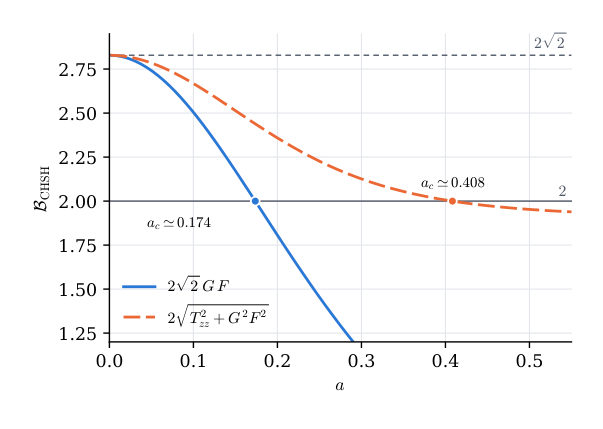
<figcaption class="paper-figure-caption"><b>Fig 1.</b> FIG. 1. Bell parameter for compact seeds at contact, d = a, as a function of the spectral width a, with the planar settings (23) (solid) and with the optimal settings (27) in the local Pauli algebra (dashed). The dots mark the widths at which each curve crosses the classical bound; the dashed horizontal line is the Tsirelson value.</figcaption>
</figure>
<figure class="paper-figure-card">
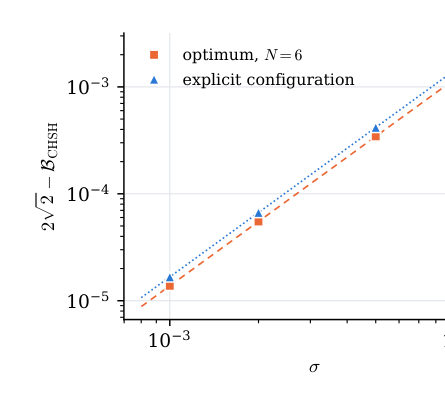
<figcaption class="paper-figure-caption"><b>Fig 2.</b> FIG. 2. Gaussian seeds centred at ω = 0. (a) Deficit 2 √</figcaption>
</figure>
</div>

<p><strong>Summary.</strong> This work studies Bell-CHSH violations in the vacuum of a 1+1 dimensional Majorana field using modular theory. The authors show that while the correlations violate classical bounds, the Tsirelson bound is never reached in the wedge vacuum. The study precisely maps how the field's even sector realizes the Summers-Werner mechanism by constraining the spectral weight near the bound.</p>
<p><strong>Why it may be interesting.</strong> It provides a concrete, physical realization (Majorana vacuum) where fundamental quantum information bounds (Tsirelson) are tested against algebraic constraints derived from quantum field theory (modular theory).</p>
<details>
<summary>Detailed structure</summary>
<p><strong>Main problem.</strong> The paper investigates the violation of the Bell-CHSH inequality using vacuum states of a free massive Majorana field in 1+1 dimensions, specifically determining how close the correlations can approach the Tsirelson bound.</p>
<p><strong>Main result.</strong> The Tsirelson bound is shown to be unattainable in the wedge vacuum, and approaching it forces the modular spectral weight of the Bell vectors to concentrate at the spectral point $\lambda=1$.</p>
<p><strong>Method.</strong> The analysis employs techniques from algebraic quantum field theory, utilizing the modular-frequency representation and the Tomita-Takesaki theory to calculate correlation functions for localized observables (bilinears).</p>
<p><strong>Model / system.</strong> The system is a free massive Majorana field in $1+1$ dimensions, whose vacuum state is analyzed by restricting observables to localized regions (Rindler wedges).</p>
<p><strong>Key observables.</strong> The Bell-CHSH parameter, one-particle overlaps, and the modular spectral weight of the Bell vectors.</p>
<p><strong>Important parameters / regimes.</strong> The modular frequency variable ($\omega$), the width parameter ($\sigma$), and the separation distance ($d$) between localized regions.</p>
<p><strong>Assumptions / limitations.</strong> The analysis is restricted to the vacuum state within Rindler wedges where the Bisognano-Wichmann theorem applies, and it does not cover correlations at finite distance.</p>
<p><strong>Figures summary.</strong> Figure 2 illustrates the deficit ($2\sqrt{2} - 	ext{BCHSH}$) decreasing quadratically with the width parameter $\sigma$ for a fixed number of modes ($N=6$), confirming the approach to the bound.</p>
<p><strong>Paper structure.</strong> The paper proceeds by defining the observables using modular theory, calculating the correlation matrix for specific seed configurations (like phase rotations of a single bump), deriving the Bell parameter in closed form, and finally performing numerical optimization to study the approach to the Tsirelson bound.</p>
</details>
<details>
<summary>Abstract</summary>
<p>In this work we study the Bell-CHSH inequality in the vacuum of the free massive Majorana field in $1+1$ dimensions, taking as the dichotomic observables of the two parties even bilinears of smeared fields localized in the right and in the left Rindler wedges. The test functions are generated from seeds in the modular-frequency variable through the Tomita-Takesaki operator of the right wedge and, on the side of the left wedge, through its adjoint multiplied by $i$, which accounts for twisted duality. For seeds supported at positive modular frequency the one-particle overlaps between the two parties do not depend on the modular weights, and we obtain the Bell parameter in closed form. When the seeds are phase rotations of a single compact bump, the bilinears generate a copy of the Pauli algebra in each wedge, and we compute exactly the correlation matrix of the vacuum restricted to the two copies. The optimal settings violate the classical bound up to spectral widths more than twice as large as those reached with planar settings. We also show that the Tsirelson bound is never attained in the wedge vacuum for any choice of dichotomic observables, and that approaching it forces the modular spectral weight of the Bell vectors to concentrate at the spectral point $λ=1$ of the modular operator. This establishes in a precise way how the even sector of the free Majorana field realizes the Summers-Werner mechanism.</p>
</details>
<p><sub><a href="#top">↑ back to top</a></sub></p>

<p><a id="paper-2610.06697"></a></p>
<h3 id="measurement-free-preparation-of-surface-code-states-with-digital-analog-counterdiabatic-drivings"><a href="http://arxiv.org/abs/2610.06697v1">Measurement-free Preparation of Surface-Code States with Digital-Analog Counterdiabatic Drivings</a></h3>
<p><strong>Authors:</strong> Shubham Kumar Balaganchi A. Bhargava, Paolo A. Erdman, Anne-Maria Visuri, Jose D. Martın-Guerrero, Yolanda Vives-Gilabert, Enrique Solano, Narendra N. Hegade<br>
<strong>Type:</strong> theory · <strong>Category:</strong> quantum information and computing · <strong>PDF:</strong> <a href="https://arxiv.org/pdf/2610.06697v1">https://arxiv.org/pdf/2610.06697v1</a><br>
<strong>Analysis basis:</strong> full PDF text, analyzed in chunks
<strong>Topic relevance:</strong> <code>analog quantum simulation</code> <strong>2/5</strong> · <code>QC/QI experiment</code> <strong>1/5</strong> · <code>quantum measurements</code> <strong>1/5</strong></p>
<div class="figure-strip-hint">↔ Scroll figures horizontally</div>
<div class="paper-figures-scroll">
<figure class="paper-figure-card">
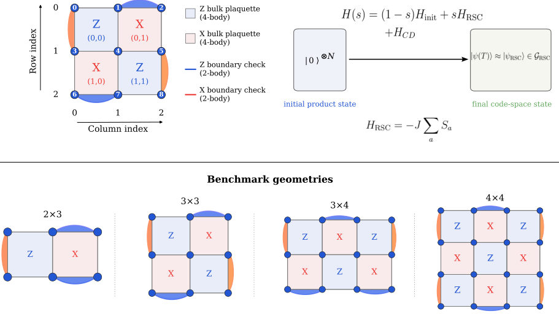
<figcaption class="paper-figure-caption"><b>Fig 1.</b> FIG. 1. Surface-code-like benchmark geometry used for CD state preparation. (a) A 3×3 qubit grid with row-major indexing. Each elementary 2 × 2 cell defines a four-body plaquette stabilizer, with Z- and X-type plaquettes assigned in a checkerboard pattern. (b) The state-preparation path interpolates from the Z-polarized product state |0⟩⊗N to the commuting plaquette- stabilizer Hamiltonian HRSC = −J P</figcaption>
</figure>
<figure class="paper-figure-card">
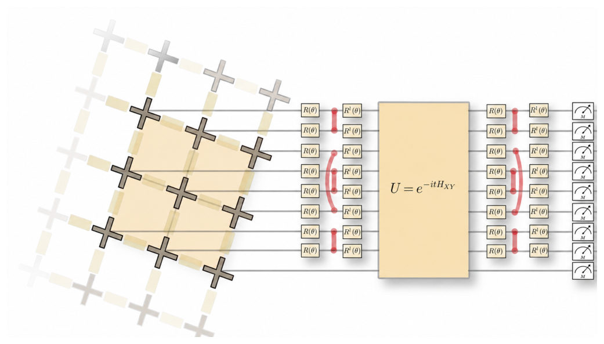
<figcaption class="paper-figure-caption"><b>Fig 2.</b> FIG. 2. Digital-analog construction for higher-order Hamiltonian ansatz. A two-dimensional superconducting-qubit processor is modeled as a grid of transmon qubits connected by tunable couplers. Activating the couplers generates native XY -exchange interactions on the hardware graph. Digital dressing layers, built from fixed-angle two-qubit XY -type gates (red curves) and single-qubit rotations, are applied on a matching set consisting of disjoint edges. Conjugating the native exchange block sequentially by these matching-dependent dressing circuits generates a structured pool of multi-body Pauli operators relevant to plaquette-local CD synthesis.</figcaption>
</figure>
<figure class="paper-figure-card">
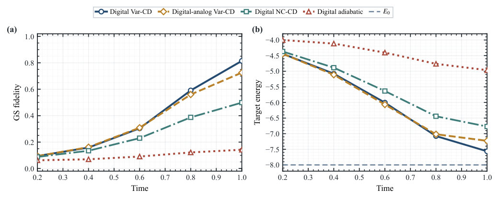
<figcaption class="paper-figure-caption"><b>Fig 3.</b> FIG. 3. The ground-state fidelity and target energy, defined in Eqs. (8) and (9), as functions of time during preparation of the ground space of HRSC, Eq. (5) on a 3 × 3 square patch. Time is reported in units of h−1. The dashed line in panel (b) denotes the ground-state energy of HSC. We set J = h and the analog couplings Jij in Eq. (20) are determined from the variational coefficients αµ(s), Eq. (13) - Eq. (14) for each dressed analog block.</figcaption>
</figure>
<figure class="paper-figure-card">
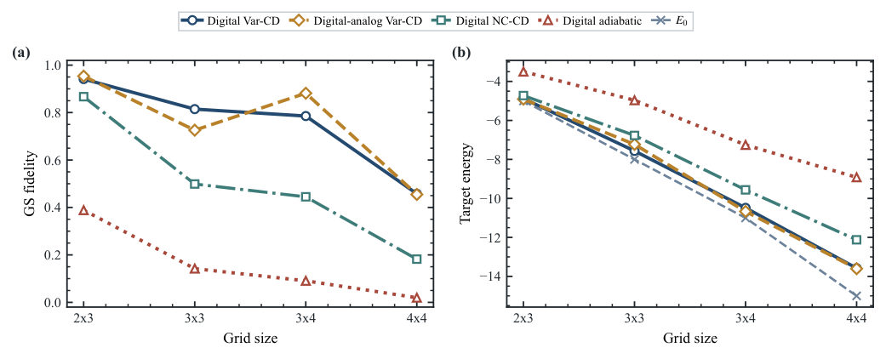
<figcaption class="paper-figure-caption"><b>Fig 4.</b> FIG. 4. Ground-state fidelity and target energy versus grid size for the surface-code-like stabilizer benchmarks. The comparison is performed at total runtime T = 1 with five Trotter steps.</figcaption>
</figure>
<figure class="paper-figure-card">
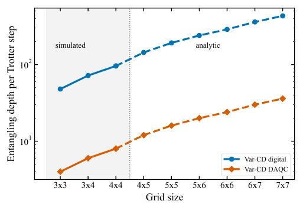
<figcaption class="paper-figure-caption"><b>Fig 5.</b> FIG. 6. Circuit-depth scaling for the stabilizer-state prepa- ration benchmarks at T = 1 for a single Trotter step. The dig- ital curve uses two-qubit iswap gates as the entangling primi- tive, while the DAQC curve is based on the entangling depth of the dressed Jij(XiXj + YiYj). The shaded region denotes simulated instances and the unshaded region the analytic ex- trapolation.</figcaption>
</figure>
</div>

<p><strong>Summary.</strong> This work details a novel digital-analog technique to prepare stabilizer-code states in superconducting circuits without measurement. By synthesizing high-order Pauli operators using only native two-qubit interactions and digital dressing, the method significantly improves state preparation fidelity over standard adiabatic or fully digital approaches. This establishes a direct link between stabilizer geometry and scalable quantum control for near-term quantum error correction.</p>
<p><strong>Why it may be interesting.</strong> It provides a concrete, hardware-aware protocol for achieving complex quantum states (stabilizer codes) by mapping abstract theoretical requirements (CD terms) onto physically realizable, native qubit interactions.</p>
<details>
<summary>Detailed structure</summary>
<p><strong>Main problem.</strong> The paper addresses the challenge of preparing stabilizer-code ground-state manifolds, a crucial step for near-term quantum error correction.</p>
<p><strong>Main result.</strong> The proposed digital-analog method successfully generates the necessary high-order counterdiabatic basis and substantially improves ground-state preparation fidelity compared to bare adiabatic evolution.</p>
<p><strong>Method.</strong> It employs Counterdiabatic (CD) driving, synthesizing the required higher-order Pauli operators using a digital-analog approach that combines native analog exchange interactions with short digital dressing layers.</p>
<p><strong>Model / system.</strong> The model is based on superconducting circuits implementing surface-code-like stabilizer states, tested on checkerboard plaquette grids up to $4	imes4$. The dynamics are governed by an interpolating Hamiltonian driven by the CD term derived from the adiabatic gauge potential.</p>
<p><strong>Key observables.</strong> Ground-state fidelity ($F_{	ext{GS}}$) and ground-state energy ($E_0$).</p>
<p><strong>Important parameters / regimes.</strong> System size ($n 	imes m$ grids), time evolution ($t$), and error parameters ($\eta$).</p>
<p><strong>Assumptions / limitations.</strong> The method assumes the structural property of the adiabatic gauge potential can be exploited, and it provides an effective resource-level description rather than a full gate-resolved simulation.</p>
<p><strong>Figures summary.</strong> Figures illustrate the surface-code benchmark geometry, the state-preparation path, and the digital-analog construction on a superconducting qubit processor grid.</p>
<p><strong>Paper structure.</strong> The paper introduces the problem, details the CD driving framework, presents the digital-analog synthesis technique using matching sets, benchmarks the method on increasing lattice sizes, and compares resource costs and fidelity against other CD protocols.</p>
</details>
<details>
<summary>Abstract</summary>
<p>Preparing stabilizer-code states with shallow circuits is an important primitive for near-term quantum error correction in superconducting circuits, where logical-state initialization requires four-body stabilizer correlations from native one- and two-body controls. We introduce a digital-analog method for the preparation of surface-code ground-state manifolds. The method exploits a structural property of the adiabatic gauge potential, mapping stabilizer-local counterdiabatic terms to digital-analog blocks on the superconducting layout using fixed-angle two-qubit \(XY\) gates, single-qubit rotations, and analog exchange-interaction evolutions. The dressed blocks generate higher-order operators used as the variational ansatz to determine the counterdiabatic terms within the Sels-Polkovnikov adiabatic-gauge-potential framework. We benchmark checkerboard plaquette-stabilizer grids up to \(4\times4\), the square-grid instances correspond to rotated surface codes, while the rectangular cases probe the scaling of the method. For all grids, the proposed method generates the dominant four-body counterdiabatic basis and, at short evolution times substantially improves the ground-state preparation as compared with bare adiabatic evolution. We further generalize the construction to \(n\times m\) stabilizer lattices and show that digital-analog synthesis can reduce the entangling depth by an order of magnitude. Together, these results establish a direct connection between stabilizer geometry, the structure of the counterdiabatic gauge potential, and digital-analog control for measurement-free preparation of stabilizer-code states on near-term superconducting architecture.</p>
</details>
<p><sub><a href="#top">↑ back to top</a></sub></p>

<p><a id="paper-2610.04704"></a></p>
<h3 id="peeling-off-abelian-anyons-and-proliferation-transitions"><a href="http://arxiv.org/abs/2610.04704v1">Peeling off Abelian Anyons and Proliferation Transitions</a></h3>
<p><strong>Authors:</strong> Meng Cheng, Nathan Seiberg<br>
<strong>Type:</strong> theory · <strong>Category:</strong> strongly correlated electrons · <strong>PDF:</strong> <a href="https://arxiv.org/pdf/2610.04704v1">https://arxiv.org/pdf/2610.04704v1</a><br>
<strong>Analysis basis:</strong> full PDF text, analyzed in chunks
<strong>Topic relevance:</strong> <code>analog quantum simulation</code> <strong>2/5</strong> · <code>Keldysh / 2PI / non-Gaussian methods</code> <strong>1/5</strong> · <code>driven-dissipative phase transition</code> <strong>1/5</strong></p>
<div class="figure-strip-hint">↔ Scroll figures horizontally</div>
<div class="paper-figures-scroll">
<figure class="paper-figure-card">

<figcaption class="paper-figure-caption"><b>Fig 1.</b> Low-resolution page preview, page 2</figcaption>
</figure>
<figure class="paper-figure-card">

<figcaption class="paper-figure-caption"><b>Fig 2.</b> Low-resolution page preview, page 3</figcaption>
</figure>
<figure class="paper-figure-card">

<figcaption class="paper-figure-caption"><b>Fig 3.</b> Low-resolution page preview, page 4</figcaption>
</figure>
<figure class="paper-figure-card">

<figcaption class="paper-figure-caption"><b>Fig 4.</b> Low-resolution page preview, page 5</figcaption>
</figure>
<figure class="paper-figure-card">

<figcaption class="paper-figure-caption"><b>Fig 5.</b> Low-resolution page preview, page 6</figcaption>
</figure>
</div>

<p><strong>Summary.</strong> This work investigates the global symmetries of a 2+1 dimensional TQFT by focusing on Abelian anyons. The authors show that these symmetries can be decoupled, leading to a description of a phase transition. This transition maps the original TQFT into a new phase, which is either gapless or another TQFT, providing deep insights into topological phase changes.</p>
<p><strong>Why it may be interesting.</strong> The deep connection between topological order, global symmetries, and phase transitions is highly relevant to understanding emergent phenomena in strongly correlated electron systems, such as fractional quantum Hall states or exotic superconducting phases.</p>
<details>
<summary>Detailed structure</summary>
<p><strong>Main problem.</strong> The paper studies the invertible one-form global symmetry of a (2+1)-dimensional Topological Quantum Field Theory (TQFT) and how this symmetry dictates the system's phase transitions.</p>
<p><strong>Main result.</strong> The symmetry 'peels off' the Abelian anyons, allowing for an independent study of their consequences, which manifest as a phase transition between the original TQFT and a gapless or different TQFT phase.</p>
<p><strong>Method.</strong> The authors use Chern-Simons terms to describe Abelian anyons and analyze the system's structure by examining the dimension of the Hilbert space on a Riemann surface using techniques related to K-matrices and Verlinde formulas.</p>
<p><strong>Model / system.</strong> The system is a (2+1)-dimensional TQFT involving Abelian anyons. The theory is analyzed by coupling these anyons to $U(1)$ gauge fields and considering the resulting phase transition dynamics.</p>
<p><strong>Key observables.</strong> The dimension of the Hilbert space on a Riemann surface ($ ext{dim } H_s(\Sigma_g)$) and the structure of global symmetries ($U(1)_B$, $Z(1)_n$).</p>
<p><strong>Important parameters / regimes.</strong> The genus of the surface ($g$), and coupling parameters like $\mu_2$ and $p$ that determine the phase.</p>
<p><strong>Assumptions / limitations.</strong> The analysis is primarily limited to bosonic theories, although extensions to fermionic theories are mentioned as straightforward.</p>
<p><strong>Figures summary.</strong> A table summarizes the fate of various UV global symmetries in different infrared (IR) phases determined by parameters like $\mu_2$ and the presence of monopole operators.</p>
<p><strong>Paper structure.</strong> The paper systematically analyzes the symmetry structure, first by showing how the symmetry isolates the Abelian anyons, then by calculating constraints on correlation functions via the Hilbert space dimension, and finally by describing the resulting phase transition theory via coupling to external gauge fields.</p>
</details>
<details>
<summary>Abstract</summary>
<p>We study the invertible one-form global symmetry of a (2+1)-dimensional topological quantum field theory (TQFT). A universal description of this symmetry ``peels off'' all the Abelian anyons from the rest of the TQFT. This allows us to study this symmetry and some of its consequences, independently of the details of the rest of the system. We then describe these Abelian anyons using $\mathrm{U}(1)$ gauge fields with Chern-Simons terms and couple them to a scalar field, thus constructing a particular non-topological theory. This new theory, our transition field theory, exhibits a phase transition from the original TQFT to another phase. The latter is either gapless or another TQFT. This discussion generalizes and extends our earlier work (arXiv:2603.00245). In particular, we give a more detailed description of the global symmetries and their fates in the various phases.</p>
</details>
<p><sub><a href="#top">↑ back to top</a></sub></p>

<p><a id="paper-2610.06448"></a></p>
<h3 id="a-practical-introduction-to-vqe-methods-challenges-and-applications-in-physics-and-chemistry"><a href="http://arxiv.org/abs/2610.06448v1">A Practical Introduction to VQE: Methods, Challenges, and Applications in Physics and Chemistry</a></h3>
<p><strong>Authors:</strong> Jannis Ehrlich, Felix Rupprecht, Konstantin Lamp, Elias Walter, Alejandro D. Somoza, Manuel Enns, Christian Elsässer, Birger Horstmann, Daniel F. Urban<br>
<strong>Type:</strong> theory · <strong>Category:</strong> strongly correlated electrons · <strong>PDF:</strong> <a href="https://arxiv.org/pdf/2610.06448v1">https://arxiv.org/pdf/2610.06448v1</a><br>
<strong>Analysis basis:</strong> full PDF text, analyzed in chunks
<strong>Topic relevance:</strong> <code>analog quantum simulation</code> <strong>2/5</strong> · <code>Keldysh / 2PI / non-Gaussian methods</code> <strong>1/5</strong></p>
<div class="figure-strip-hint">↔ Scroll figures horizontally</div>
<div class="paper-figures-scroll">
<figure class="paper-figure-card">

<figcaption class="paper-figure-caption"><b>Fig 1.</b> Figure 1. Schematic overview of the Variational Quantum Eigensolver (VQE) workflow for electronic structure calculations. The pipeline is organized into three main stages: Classical Pre-Processing (blue) encompasses the construction of the electronic Hamiltonian with active space selection and embedding techniques (Sec. II A), fermion-to-qubit mappings such as Jordan–Wigner or Bravyi–Kitaev (Sec. II B), and the selection of a parametrized ansatz with appropriate initial state prepara- tion, typically Hartree–Fock (Sec. II C). Circuit Execution (green) involves transpilation of the logical circuit to hardware-native gates, qubit connectivity constraints, and circuit compression optimizations...</figcaption>
</figure>
<figure class="paper-figure-card">

<figcaption class="paper-figure-caption"><b>Fig 2.</b> Figure 2. Molecular electronic orbitals can be separated into core (occupied), active, and virtual (empty) orbitals. Left: Selection based on orbital energies, i.e. orbitals around the Fermi energy are considered active. Right: Selection based on a different criterion, e.g. orbital entropies, where light (dark) gray indicates low (high) entropy.</figcaption>
</figure>
<figure class="paper-figure-card">

<figcaption class="paper-figure-caption"><b>Fig 3.</b> Figure 3. Regular square lattice with snake-like enumeration of sites.</figcaption>
</figure>
<figure class="paper-figure-card">

<figcaption class="paper-figure-caption"><b>Fig 4.</b> Figure 8. Schematic of the iterative ADAPT-VQE ansatz construction. In each step, all operators of a pre-defined pool are rated, e.g. according to their energy-gradient, and the best one is appended to the ansatz circuit. The full set of parameters is then optimized with a short VQE optimization. This procedure is repeated until a convergence criterion is fulfilled.</figcaption>
</figure>
<figure class="paper-figure-card">

<figcaption class="paper-figure-caption"><b>Fig 5.</b> Figure 9. Flowchart for computing the expectation value ⟨H⟩= ⟨ψ(θ)|H|ψ(θ)⟩via Pauli string decomposition and measurement-based evaluation.</figcaption>
</figure>
</div>

<p><strong>Summary.</strong> This paper offers a comprehensive, practical guide to the Variational Quantum Eigensolver (VQE) for tackling electronic structure problems. It systematically breaks down the VQE workflow, covering everything from Hamiltonian mapping and ansatz design to error mitigation techniques. The goal is to provide an accessible entry point for researchers applying quantum computation to correlated materials and molecular physics.</p>
<p><strong>Why it may be interesting.</strong> It directly addresses the application of quantum computation (VQE) to fundamental problems in condensed matter and quantum chemistry, which is highly relevant for researchers in AMO physics studying many-body interactions.</p>
<details>
<summary>Detailed structure</summary>
<p><strong>Main problem.</strong> The central challenge addressed is understanding correlated electron systems, which is a grand challenge in quantum chemistry and materials science.</p>
<p><strong>Main result.</strong> The paper provides a structured, practical overview of the Variational Quantum Eigensolver (VQE) workflow, detailing its components and practical considerations for applying it to electronic structure problems.</p>
<p><strong>Method.</strong> The core method discussed is VQE, a hybrid quantum-classical algorithm that estimates the ground-state energy by minimizing the expectation value of the electronic Hamiltonian using parameterized quantum circuits (ansatz).</p>
<p><strong>Model / system.</strong> The focus is on electronic structure and materials science problems, modeled by fermionic Hamiltonians (like those for molecular or solid-state systems, e.g., Hubbard model). The complexity is managed by techniques like Active Space Selection.</p>
<p><strong>Key observables.</strong> Ground-state energy approximation ($   ext{|}\Psi_0
angle$), binding energies, and equilibrium geometry.</p>
<p><strong>Important parameters / regimes.</strong> Circuit depth, noise characteristics, available error-mitigation techniques, and the choice of ansatz circuit.</p>
<p><strong>Assumptions / limitations.</strong> The primary approximations involve restricting the problem to an Active Space and using VQE to approximate the exact quantum evolution, which is resource-intensive for NISQ devices.</p>
<p><strong>Figures summary.</strong> One figure caption illustrates orbital partitioning (core, active, virtual) using different criteria like orbital energies versus orbital entropies.</p>
<p><strong>Paper structure.</strong> The article is structured to guide the reader through the VQE workflow, covering problem encoding, ansatz construction, classical optimization, and measurement strategies, before presenting examples from physics and quantum chemistry.</p>
</details>
<details>
<summary>Abstract</summary>
<p>The Variational Quantum Eigensolver (VQE) has become a central hybrid quantum-classical method for addressing electronic structure and materials science problems on near-term quantum hardware. As researchers across physics, chemistry, and quantum information engage with VQE, they encounter a wide range of algorithmic choices, including problem encoding, ansatz construction, classical optimization, and measurement strategies to choose from. This article provides a structured overview of these components and discusses practical factors that influence VQE performance in real settings, such as noise characteristics, available error-mitigation techniques, and hardware-dependent circuit considerations. Drawing partly on our early experiences, we highlight aspects that may be especially relevant for newcomers and outline common challenges observed in practical workflows. Our aim is to offer an accessible entry point for researchers approaching VQE-based quantum simulation and to support informed decision-making as the method and underlying hardware continue to evolve, which we support by discussion of examples from physics and quantum chemistry.</p>
</details>
<p><sub><a href="#top">↑ back to top</a></sub></p>

<p><a id="paper-2610.06110"></a></p>
<h3 id="beyond-the-flat-band-paradigm-open-orbits-as-a-route-to-correlated-states-in-dispersive-moire-minibands"><a href="http://arxiv.org/abs/2610.06110v1">Beyond the Flat-Band Paradigm: Open Orbits as a Route to Correlated States in Dispersive Moiré Minibands</a></h3>
<p><strong>Authors:</strong> Zihao Wang, Pablo M. Perez-Piskunow, Calvin Pei Yu Wong, Matthew Holwill, Hao Sun, Wei Fu, Junxiong Hu, Zheng Yuntian, Zhang Xuanrui, T. Taniguchi, K. Watanabe, A. Ariando, Geliang Yu, Li Lin, Kuan Eng Johnson Goh, Stephan Roche, Jeil Jung, Kostya S. Novoselov, Nicolas Leconte<br>
<strong>Type:</strong> both · <strong>Category:</strong> strongly correlated electrons · <strong>PDF:</strong> <a href="https://arxiv.org/pdf/2610.06110v1">https://arxiv.org/pdf/2610.06110v1</a><br>
<strong>Analysis basis:</strong> full PDF text, analyzed in chunks
<strong>Topic relevance:</strong> <code>analog quantum simulation</code> <strong>2/5</strong> · <code>Keldysh / 2PI / non-Gaussian methods</code> <strong>1/5</strong></p>
<div class="figure-strip-hint">↔ Scroll figures horizontally</div>
<div class="paper-figures-scroll">
<figure class="paper-figure-card">

<figcaption class="paper-figure-caption"><b>Fig 1.</b> Figure 1: Full spectrum magnetic-field dependence of electronic states in G-hBN su- perlattice and signatures of incipient FCI behavior. a Displays σxx and Rxy, highlighting hole and electron SDP (black dashed lines), Landau level splitting (yellow-dashed area), and non- linear Wannier diagram region (purple dashed area). vHS positions are marked as A to D. b Semi-classical LL predictions based on zero-field Fermi contours, with colors indicating specific minibands. c shows the minibands corresponding to the Landau levels. d highlights the DOS vHS caused by the open orbits around saddle points, and its inset shows the open orbit saddle point for A as a dashed line, separating the hole-type...</figcaption>
</figure>
<figure class="paper-figure-card">

<figcaption class="paper-figure-caption"><b>Fig 2.</b> Figure 2: Open-orbit induced XMR. a Low-field Rxx demonstrates positive XMR at hole-side singularities A and B, aligned with open orbits in minibands. b The hollow circles represent peak values at different magnetic fields, while the light-colored lines indicate the fitting curves. The magnetoresistance increases by several hundred-fold at low magnetic fields, indicating strongly suppressed carrier propagation at open-orbit energies A and B. c Theoretical estimates of the conductivity on the hole side. The highlighted regions near open orbits A and B show suppressed conductivity associated with open-orbit dynamics. d correlates electron orbits in real space with k-space counterparts,...</figcaption>
</figure>
<figure class="paper-figure-card">

<figcaption class="paper-figure-caption"><b>Fig 3.</b> Figure 3: Single-particle fermiology and topological structure of the active miniband. a Fermi contours showing the trigonal-warping induced merging of Fermi pockets as highlighted in the inset. b Semi-classical confirmation of splitting using the contours from a where we plot a subset of LLs for each energy. Same-color arrows are used to correlate the pockets in a with their corresponding LL behavior. Diophantine equation fitting of the gaps separating the semi-classical Landau levels. The values give the slopes t following the experimental sequences, as given in the text, but using m′ = 2m instead of m, where the additional factor 2 accounts for the valley degree of freedom, because our...</figcaption>
</figure>
<figure class="paper-figure-card">

<figcaption class="paper-figure-caption"><b>Fig 4.</b> Figure 4: High-resolution transport signatures of incipient FCI behavior on the hole side, corresponding to the yellow-dashed region from Fig. 1a. a ρxx map. b ρxy map. c dσxx/dB representation enhancing the visibility of integer and fractional features. d Schematic summary of the observed integer and fractional filling sequences. Dark green, orange, and dark red correspond respectively to the 1-pocket, 2-(or 4-)pocket, and 3-pocket regimes induced by trigonal warping. Blue lines mark the candidate fractional states. Panels e and f show temperature- dependent linecuts at B = 1.2 T through the (t, s) = (−13/3, −1/3) and (−25/3, −1/3) features. The trajectories in panel d are resolved over...</figcaption>
</figure>
</div>

<p><strong>Summary.</strong> This paper explores how correlated topological states, like Fractional Chern Insulators, might form in moiré systems with dispersive bands, rather than requiring perfectly flat bands. By analyzing graphene on hBN under weak magnetic fields, the authors show that open orbits near saddle points enhance electron-electron interactions, leading to transport signatures consistent with developing FCI behavior.</p>
<p><strong>Why it may be interesting.</strong> The work provides a mechanism to achieve correlated topological states in a more general, dispersive band setting, which is highly relevant for understanding emergent quantum phenomena in engineered 2D materials.</p>
<details>
<summary>Detailed structure</summary>
<p><strong>Main problem.</strong> The research investigates whether strongly correlated topological phases, such as Fractional Chern Insulators (FCI), can emerge in moiré systems with genuinely dispersive energy bands, moving beyond the traditional flat-band paradigm.</p>
<p><strong>Main result.</strong> The authors propose that the interplay of open orbits generated by saddle-point van Hove singularities, weak magnetic fields, and trigonal warping can drive incipient FCI behavior in dispersive bands.</p>
<p><strong>Method.</strong> The study combines theoretical analysis of semiclassical electron dynamics with high-resolution magnetotransport measurements on graphene/hBN superlattices.</p>
<p><strong>Model / system.</strong> The physical platform is monolayer graphene placed on hexagonal boron nitride (graphene-hBN) forming a moiré superlattice. The analysis focuses on the low-field classical-to-quantum crossover regime.</p>
<p><strong>Key observables.</strong> Fractional-slope transport features, signatures of interaction-driven incompressibility, and large positive magnetoresistance (XMR).</p>
<p><strong>Important parameters / regimes.</strong> Weak magnetic fields ($B < 1.5$ T), the low-field crossover regime, and the presence of saddle-point van Hove singularities.</p>
<p><strong>Assumptions / limitations.</strong> The authors explicitly caution that the observed behavior is 'incipient FCI behavior' because the Hall conductivity is not fully quantized and the longitudinal resistance remains finite.</p>
<p><strong>Figures summary.</strong> Figures illustrate global magnetotransport ($\sigma_{xx}, R_{xy}$), semi-classical Landau level predictions, and the density of states (DOS) showing vHS caused by open orbits around saddle points.</p>
<p><strong>Paper structure.</strong> The paper establishes the open question regarding FCI formation in dispersive bands, details the mechanism involving open orbits and weak fields, presents magnetotransport evidence of fractional signatures, and concludes by proposing a new fermiology-driven route to correlated states.</p>
</details>
<details>
<summary>Abstract</summary>
<p>The realization of fractional Chern insulators has largely relied on isolated flat bands in complex bilayer or multilayer moiré systems with ideal quantum geometry. Whether such phases can emerge in genuinely dispersive bands, and by what mechanism, remains an open question. Here, we propose a mechanism for magnetic-field-induced strong correlations in the highly dispersive bands of monolayer graphene on hexagonal boron nitride. In the low-field classical-to-quantum crossover regime of the second moiré miniband, we show that the interplay of the moiré potential and weak magnetic fields (B &lt; 1.5 T) profoundly alters electron dynamics. Saddle-point van Hove singularities produce extended open orbits that strongly suppress carrier propagation, potentially favoring a regime in which Coulomb interactions become comparatively more important, while weak magnetic fields lift valley degeneracy and trigonal warping redistributes Berry curvature. High-resolution magnetotransport and temperature-dependent measurements reveal fractional-slope transport features and signatures of interaction-driven incompressibility. Because the Hall conductivity is not fully quantized and the longitudinal resistance remains finite, we describe these observations as incipient FCI behavior: transport signatures consistent with a developing fractional Chern insulating state, without claiming a fully developed FCI phase established by complete Hall quantization and vanishing longitudinal resistance. Our results suggest a possible fermiology-driven route toward correlated topological states in dispersive bands in the classical-to-quantum crossover, distinct from the conventional flat-band scenario.</p>
</details>
<p><sub><a href="#top">↑ back to top</a></sub></p>

<p><a id="paper-2610.06080"></a></p>
<h3 id="gaussian-universality-and-its-breakdown-in-tensor-network-machine-learning"><a href="http://arxiv.org/abs/2610.06080v1">Gaussian Universality and Its Breakdown in Tensor-Network Machine Learning</a></h3>
<p><strong>Authors:</strong> Shi-Tuan Wang, Zidu Liu, Li-Wei Yu<br>
<strong>Type:</strong> theory · <strong>Category:</strong> numerical methods · <strong>PDF:</strong> <a href="https://arxiv.org/pdf/2610.06080v1">https://arxiv.org/pdf/2610.06080v1</a><br>
<strong>Analysis basis:</strong> full PDF text, analyzed in chunks
<strong>Topic relevance:</strong> <code>methods for driven-dissipative</code> <strong>2/5</strong> · <code>analog quantum simulation</code> <strong>1/5</strong></p>
<div class="figure-strip-hint">↔ Scroll figures horizontally</div>
<div class="paper-figures-scroll">
<figure class="paper-figure-card">

<figcaption class="paper-figure-caption"><b>Fig 1.</b> Fig. 1. Schematic summary of statistical behaviors arising in different tensor-network scaling regimes. For the local observ- able outcome C( ˆOl) = ⟨ψ| ˆOl|ψ⟩, as either D or d increases, the outcome distribution approaches a Gaussian distribution. For the global observable outcome C( ˆOg) = ⟨ψ| ˆOg|ψ⟩, as D increases, the outcome distribution gradually approaches a Gaussian distribution, whereas for increasing d, the out- come distribution is no longer Gaussian. For a finite sequence { ˆOai}p i=1, one has P(C( ˆOa1), · · · , C( ˆOap)) ∼N (0, Σ), a ∈ {l, g}.</figcaption>
</figure>
<figure class="paper-figure-card">

<figcaption class="paper-figure-caption"><b>Fig 2.</b> Fig. 2. Two-dimensional joint probability densities and their scaled marginal distributions obtained numerically with n = 15 physical sites, bond dimension D = 128, and 4 × 106</figcaption>
</figure>
<figure class="paper-figure-card">

<figcaption class="paper-figure-caption"><b>Fig 3.</b> Fig. 3. Numerical distributions and theoretical predictions for MPS observables, using approximately 107 samples for each parameter set. Upper panel: local outputs C( ˆOl) for dif- ferent system sizes n at D = 32, compared with the predicted Gaussian distribution. The inset shows the excess kurtosis κ as a function of D. Lower panel: global outputs C( ˆOg) at d = 64 and D = 2, compared with a Gaussian distribution of equal variance. The inset shows κ as a function of d at D = 2.</figcaption>
</figure>
</div>

<p><strong>Summary.</strong> This work rigorously analyzes Gaussian universality in tensor-network machine learning models by examining the moments of observables. It proves that while local observables often retain Gaussian behavior under certain scaling limits, global observables exhibit persistent non-Gaussian corrections when the physical dimension is large. The study highlights that the statistical properties are governed by the interplay between the network's entanglement capacity (bond dimension) and the observable's scope (locality).</p>
<p><strong>Why it may be interesting.</strong> The findings provide deep insights into the statistical physics of quantum information processing, showing that the complexity of the observable (local vs. global) dictates the underlying statistical nature, which is crucial for designing robust quantum machine learning algorithms.</p>
<details>
<summary>Detailed structure</summary>
<p><strong>Main problem.</strong> The paper investigates the conditions under which Gaussian universality holds for observables calculated using machine learning models structured by tensor networks.</p>
<p><strong>Main result.</strong> Gaussian universality breaks down for global observables when the physical dimension ($d$) is large while the bond dimension ($D$) is fixed, indicating that architectural scaling and observable locality are crucial control parameters.</p>
<p><strong>Method.</strong> The analysis employs a moment-based approach, utilizing the Cramér-Wold device to test for convergence to a Gaussian Process (GP) by examining higher-order moments and excess kurtosis.</p>
<p><strong>Model / system.</strong> The model is based on Tensor-Network (TN) machine learning architectures, specifically focusing on Matrix Product States (MPS) representing quantum states, and analyzing expectation values of local versus global observables.</p>
<p><strong>Key observables.</strong> Local observables ($\hat{O}_l$) and global observables ($\hat{O}_g$), and the $k$-th order moment of the observable distribution $C(\hat{O})$.</p>
<p><strong>Important parameters / regimes.</strong> Bond dimension ($D$), physical dimension ($d$), system size ($n$), and the scaling limits ($D 	o \infty$, $d 	o \infty$, etc.).</p>
<p><strong>Assumptions / limitations.</strong> The analysis assumes the use of Haar-random TNs and relies on asymptotic bounds derived from matrix inequalities and moment calculations.</p>
<p><strong>Figures summary.</strong> Figures summarize the Gaussian behavior for local vs. global observables across different scaling regimes, and one figure compares sampled output distributions against predicted Gaussian distributions using excess kurtosis.</p>
<p><strong>Paper structure.</strong> The paper systematically analyzes the convergence of moments for local and global observables in various limits. It first establishes GP convergence for local observables in the large $D$ limit, then proves the breakdown of Gaussianity for global observables in the large $d$ limit, and finally provides rigorous moment bounds for the deviation from Gaussianity.</p>
</details>
<details>
<summary>Abstract</summary>
<p>Gaussian-process limits are powerful in describing overparameterized machine learning models, yet their validity in structured tensor-network architectures remains unclear. Here we analytically present a moment-based approach that identifies precise conditions for the emergence and breakdown of Gaussian universality in tensor-network learning models, with a focus on matrix product states. We prove that in the large bond dimension limit, the learning models with both local and global observables converge to Gaussian processes, with explicit finite-size bounds on higher-order moment deviations. Whereas in the large physical dimension limit, the Gaussian universality no longer persists: while the models with local observables retain Gaussian-process behavior, those global cases exhibit persistent non-Gaussian corrections. Our results reveal that Gaussian-process behavior in tensor-network learning is controlled not only by parameter number, but also by architectural scaling, observable locality, and the spectral properties.</p>
</details>
<p><sub><a href="#top">↑ back to top</a></sub></p>

<p><a id="paper-2610.04841"></a></p>
<h3 id="landau-damping-and-mode-selective-instability-of-a-vortex-gas"><a href="http://arxiv.org/abs/2610.04841v1">Landau damping and mode-selective instability of a vortex gas</a></h3>
<p><strong>Authors:</strong> H. Terças, J. L. Figueiredo, J. T, Mendonça<br>
<strong>Type:</strong> theory · <strong>Category:</strong> other · <strong>PDF:</strong> <a href="https://arxiv.org/pdf/2610.04841v1">https://arxiv.org/pdf/2610.04841v1</a><br>
<strong>Analysis basis:</strong> full PDF text, analyzed in chunks
<strong>Topic relevance:</strong> <code>Keldysh / 2PI / non-Gaussian methods</code> <strong>2/5</strong> · <code>analog quantum simulation</code> <strong>1/5</strong></p>
<div class="figure-strip-hint">↔ Scroll figures horizontally</div>
<div class="paper-figures-scroll">
<figure class="paper-figure-card">

<figcaption class="paper-figure-caption"><b>Fig 1.</b> FIG. 1. (color online) Normal modes of a cold vortex gas composed of Nv = 1000 vortices in a circular domain of radius R. Left column: snapshots of the spatial configurations for the modes m = 2, 3 and 4. Right column: normalized Fourier transforms of the moments, |Qm(ω)|, showing the resonance frequencies ωm predicted by Eq. (36).</figcaption>
</figure>
<figure class="paper-figure-card">

<figcaption class="paper-figure-caption"><b>Fig 2.</b> FIG. 2. (color online) Contour rotation and the search for Landau poles. Left panel: under J →Jeiθ, the contin- uum mΩ(J) aparts from the real axis [0, mΩ0] and swings to arg ω = −θ, uncovering the shaded sector of the second sheet. The single θ-stable (i.e. fixed) eigenvalue is the m = 2 pole of Eq. (54) (filled circle). For m ≥3, every candidate moves with θ and belongs to the rotated continuum. Right panel: The existence criterion in Eq. (55), collective frequency scale over shear detuning across the mode’s own radial shape, against Eq. (56) (line). It crosses unity at m∗= 2.94, leaving m = 2 above threshold and m = 3 marginal by two percent.</figcaption>
</figure>
<figure class="paper-figure-card">

<figcaption class="paper-figure-caption"><b>Fig 3.</b> FIG. 3. (color online) Landau damping of a smooth vor- tex gas. Left: snapshot of the Gaussian equilibrium, with the critical layer of the quadrupole, rc = 2.11 a from Eq. (54), as a dashed circle; the inset shows f0 against r/a with the same radius marked, far out on the skirt where the vortic- ity gradient has fallen by more than an order of magnitude. Right: multipole amplitude |Qm(t)| for m = 2, 3, 4, each curve drawn solid while it stands above its own discreteness floor and faded once it does not. The perturbation is seeded only azimuthally, as fm(r, 0) ∝r e−r2/a2, the vortices being laid down on equal-quantile rings with golden-angle offsets so that every multipole starts at machine...</figcaption>
</figure>
<figure class="paper-figure-card">

<figcaption class="paper-figure-caption"><b>Fig 4.</b> FIG. 4. (color online) Stability diagram of the patch– ring system, from the dielectric determinant (65). Left: un- stable region of each multipole in the (ξ, η) plane, bounded by its inner (solid) and outer (dashed) edge. As η →0 every window closes onto its own resonance ξres = p</figcaption>
</figure>
<figure class="paper-figure-card">

<figcaption class="paper-figure-caption"><b>Fig 5.</b> FIG. 5. (color online) Mode-selective vortex-ring instability. Uniform patch (blue) and thin ring (red) at fixed radius ξ = √</figcaption>
</figure>
</div>

<p><strong>Summary.</strong> This paper develops a kinetic theory for a collisionless gas of point vortices, showing that their collective behavior mirrors that of plasmas. Key findings include the prediction of vortex Landau damping and a strong mode-selection mechanism that filters out higher multipoles. This establishes kinetic theory as a natural framework for understanding vortex transport in astrophysical superfluids.</p>
<p><strong>Why it may be interesting.</strong> The work provides a powerful analogy between vortex dynamics (relevant in superfluids like neutron stars) and established plasma physics, utilizing kinetic theory methods applicable to complex many-body systems.</p>
<details>
<summary>Detailed structure</summary>
<p><strong>Main problem.</strong> To establish a systematic kinetic theory for collective vortex dynamics in a collisionless point-vortex gas, connecting microscopic dynamics to macroscopic collective behavior.</p>
<p><strong>Main result.</strong> The theory predicts phenomena analogous to plasma physics, including Landau damping and a mode-selection mechanism where differential rotation selectively excites only the quadrupolar quasi-mode for a Gaussian cloud.</p>
<p><strong>Method.</strong> The authors derive a reduced Klimontovich equation and utilize the Vlasov formalism adapted for the non-canonical Hamiltonian structure of vortex interactions.</p>
<p><strong>Model / system.</strong> The system is a gas of point vortices interacting via long-range logarithmic potentials in two dimensions. The dynamics are governed by a non-canonical Poisson bracket, leading to a Vlasov-like kinetic equation.</p>
<p><strong>Key observables.</strong> Vortex Rossby-like waves, global oscillations, the dielectric response operator, and the damping rate of the quadrupolar quasi-mode.</p>
<p><strong>Important parameters / regimes.</strong> The collisionless limit ($  au_{coll} \gg t_{dyn}$), the vortex density ($N_v$), and the azimuthal number ($m$).</p>
<p><strong>Assumptions / limitations.</strong> The system is treated as an incompressible, 2D gas, and the analysis focuses on the collisionless regime, neglecting explicit pinning or mutual friction.</p>
<p><strong>Figures summary.</strong> Figures illustrate normal modes for a cold vortex gas in a circular patch, showing spatial configurations and normalized Fourier transforms of moments for different multipoles.</p>
<p><strong>Paper structure.</strong> The paper systematically develops the kinetic theory, moving from the full continuity equation to the Vlasov limit, analyzing the dispersion relation using WKB approximations, and finally deriving the mode selection rules via the dielectric response operator.</p>
</details>
<details>
<summary>Abstract</summary>
<p>We show that a collisionless point-vortex gas behaves as a genuine Vlasov system. Starting from the non-canonical Hamiltonian structure of point-vortex dynamics, we derive a reduced Klimontovich equation and the corresponding Vlasov description directly on the physical plane, without introducing auxiliary momentum variables. The theory predicts a rich spectrum of collective phenomena, including vortex Rossby-like waves, global oscillations, resonant critical layers, and a dielectric response operator analogous to that of plasmas and self-gravitating systems. For smooth vortex distributions, differential rotation gives rise to a vortex analogue of Landau damping, whereby collective modes transfer energy and angular momentum to resonant vortex annuli in the absence of collisions or dissipation. Remarkably, differential rotation acts as a stringent mode-selection mechanism: for a Gaussian vortex cloud, only a single quadrupolar quasi-mode survives, while all higher multipoles are destroyed by phase mixing. We further predict a vortex counterpart of the beam--plasma instability, in which a thin vortex ring orbiting an Onsager patch selectively excites Kelvin modes with an azimuthal symmetry controlled by the ring population. These results establish kinetic theory as a natural framework for collective vortex dynamics and suggest new mechanisms for vortex transport, vortex avalanches, and rotational glitches in neutron-star superfluids.</p>
</details>
<p><sub><a href="#top">↑ back to top</a></sub></p>

<p><a id="paper-2610.03883"></a></p>
<h3 id="on-information-propagation-in-krylov-subspaces"><a href="http://arxiv.org/abs/2610.03883v1">On Information Propagation in Krylov Subspaces</a></h3>
<p><strong>Authors:</strong> Pablo Martinez-Azcona, Maximilian Meyer-Moelleringhof, Adolfo del Campo, Apollonas S. Matsoukas-Roubeas<br>
<strong>Type:</strong> theory · <strong>Category:</strong> statistical mechanics · <strong>PDF:</strong> <a href="https://arxiv.org/pdf/2610.03883v1">https://arxiv.org/pdf/2610.03883v1</a><br>
<strong>Analysis basis:</strong> full PDF text, analyzed in chunks
<strong>Topic relevance:</strong> <code>analog quantum simulation</code> <strong>2/5</strong> · <code>scars &amp; prethermalization</code> <strong>1/5</strong></p>
<div class="figure-strip-hint">↔ Scroll figures horizontally</div>
<div class="paper-figures-scroll">
<figure class="paper-figure-card">

<figcaption class="paper-figure-caption"><b>Fig 1.</b> FIG. 1. (a) Paths in the Krylov chain and bounds. The paths are generated by the recurrence relation (inset). The two axes are m, corresponding to the power of the generator and time P</figcaption>
</figure>
<figure class="paper-figure-card">

<figcaption class="paper-figure-caption"><b>Fig 2.</b> FIG. 2. Dynamics in the Krylov chain and bounds for the complexity algebras: (left) SL(2, R) with η = 3 and (right) Heisenberg-Weyl. The plots show the threshold tϵ (black solid line) where we choose ϵ = 10−3 in Eq. (5), the SL (dash-dotted blue), the corrected SL (dotted purple) and the lightcone (red) with a = 0 (thin solid line) and with a = 1 (thick dashed line). We also show the Krylov complexity K(t) (white). (down) Lanczos coefficients (green line dotted every 10 points) and causality bound on bn (7) (shaded green area) along with the UOGH bound (8) (dashed gray line). SL(2, R) has a logarithmic scale on n to highlight the expo- nentially spreading light cone.</figcaption>
</figure>
<figure class="paper-figure-card">

<figcaption class="paper-figure-caption"><b>Fig 3.</b> FIG. 3. Dynamics in the Krylov chain and bounds for Skew Field Ising model with L = 50 spins in the chaotic h = 0.5 (left) and integrable h = 0 (right) phases. (lower insets) Lanczos coef- ficients (green dots), with their asymptotic bn = αn/ log n (left) and bn = α√n (right) and the causality bound (green shaded area) along with the UOGH bound (8) (dashed gray line). The bounds depicted are the same as in Fig. 2: Light cones with v0, v1 (right), speed limit (blue dash dotted) and correction to the speed limit (pur- ple dotted). We also show the Krylov complexity K(t) (white)</figcaption>
</figure>
<figure class="paper-figure-card">

<figcaption class="paper-figure-caption"><b>Fig 4.</b> FIG. 4. Dynamics in the full Krylov chain for SFIM with L = 5 spins. The plot shows the same lines as in the main text: tϵ (black), speed limit (blue dash-dotted), corrected SL (purple dotted), and Krylov complexity (white). Furthermore, here we show the linear light cone (orange) which holds almost always but is not tight, indeed a sub-ballistic version with z = 5/4 more closely reproduces the lightcone. The plot is in log-log to highlight the difference in behavior of small and large n in the Lanczos, and to show clearly the power-laws. The plot also shows the Lanczos coefficients (down) (green dots), with the causality bound (green shaded area) along with the UOGH bound (8) (dashed gray...</figcaption>
</figure>
<figure class="paper-figure-card">

<figcaption class="paper-figure-caption"><b>Fig 5.</b> Figure 4 shows the dynamics in the entire Krylov chain for the SFIM (9) with few spins L = 5 starting from the operator ˆO0 = ˆσx L. The full Krylov dimension is DK = 993. We observe that as observed in the main text the SL performs better at short times, while the Light cone is tighter at long times. However, note that here, since we do not use the aLC the functional dependence on the Lanczos is the same and the only difference is the prefactor. Interestingly, SL, cSL, and LC describe well tϵ with a similar power law t ∼nz where z ≈5</figcaption>
</figure>
</div>

<p><strong>Summary.</strong> This work establishes fundamental speed limits for how information can spread in quantum systems by mapping the dynamics onto a Krylov subspace chain. It derives bounds analogous to the Lieb-Robinson bound, showing that causality strictly limits the growth of system coefficients. The results are highly relevant for understanding the time scales of quantum evolution in many-body physics.</p>
<p><strong>Why it may be interesting.</strong> The connection between information propagation bounds (like Lieb-Robinson bounds) and the structure of the Krylov subspace provides a powerful, general tool for analyzing dynamics in complex quantum systems, relevant to understanding thermalization and entanglement spreading.</p>
<details>
<summary>Detailed structure</summary>
<p><strong>Main problem.</strong> The paper investigates fundamental speed limits and bounds on information propagation within the dynamical subspaces (Krylov subspaces) of isolated many-body quantum systems.</p>
<p><strong>Main result.</strong> Causality constraints on the Lanczos coefficients imply that the information spread is bounded by a linear growth rate, leading to a Lieb-Robinson bound analogue for the Krylov chain.</p>
<p><strong>Method.</strong> The analysis uses Krylov subspace methods to model quantum dynamics as a 1D chain, deriving time-evolution amplitudes and comparing various theoretical bounds (Speed Limit, Corrected SL, Loschmidt Echo) against numerical results.</p>
<p><strong>Model / system.</strong> The study applies to general quantum initial value problems, specifically analyzing the dynamics of the $   ext{SL}(2, \mathbb{R})$, Heisenberg-Weyl algebra, and the Skew-Field Ising Model, which are mapped onto a spin chain Hamiltonian.</p>
<p><strong>Key observables.</strong> Probability amplitudes $\varphi_n(t)$, Krylov complexity $K(t)$, and various time scales ($    au_{SL}^n$, $   au_{cSL}^n$, $  au_E$).</p>
<p><strong>Important parameters / regimes.</strong> Lanczos coefficients $\{b_n\}$, the subspace dimension $D_K$, and the growth exponent $\delta$ for power-law coefficients.</p>
<p><strong>Assumptions / limitations.</strong> The analysis relies on the tridiagonalization of the dynamical generator into the Krylov basis and uses approximations for higher-order path expansions.</p>
<p><strong>Figures summary.</strong> Figures compare different theoretical bounds (Speed Limit, Corrected SL, Loschmidt Echo) against the true numerical time for various models, and illustrate the relationship between Lanczos coefficients and causality bounds.</p>
<p><strong>Paper structure.</strong> The paper progresses by establishing the general framework of information propagation in Krylov subspaces, deriving the speed limit based on causality, applying this to specific models ($    ext{SL}(2, \mathbb{R})$, SFIM), and finally comparing the accuracy of different bounding techniques.</p>
</details>
<details>
<summary>Abstract</summary>
<p>Krylov subspace methods provide an efficient tool for modeling any quantum initial value problem as a one dimensional chain. A time ordered path formulation, in which the dynamical generator successively splits probability between paths, yields a speed limit within such dynamical subspaces. For power law growing Lanczos coefficients $b_n \sim n^δ$ we find super ballistic lightcones, with an exponentially spreading lightcone for maximal growth $δ= 1$. Causality in the Krylov chain constrains the Lanczos coefficients to grow at most linearly. We illustrate the validity of the above in the $SL(2, R)$ and Heisenberg Weyl algebras, and in a many body skew field Ising model. Moreover, we extend the above bound to the family of $Q$ complexities. Lastly, mapping to a spin chain gives a Lieb Robinson bound analogue and opens the problem to standard condensed matter methods.</p>
</details>
<p><sub><a href="#top">↑ back to top</a></sub></p>

<p><a id="paper-2610.06811"></a></p>
<h3 id="polynomial-time-simulation-of-non-clifford-quantum-error-correction"><a href="http://arxiv.org/abs/2610.06811v1">Polynomial-time simulation of non-Clifford quantum error correction</a></h3>
<p><strong>Authors:</strong> Serban Cercelescu, Mark Koch, Arthur Pesah<br>
<strong>Type:</strong> theory · <strong>Category:</strong> quantum information and computing · <strong>PDF:</strong> <a href="https://arxiv.org/pdf/2610.06811v1">https://arxiv.org/pdf/2610.06811v1</a><br>
<strong>Analysis basis:</strong> full PDF text, analyzed in chunks
<strong>Topic relevance:</strong> <code>quantum measurements</code> <strong>2/5</strong> · <code>methods for driven-dissipative</code> <strong>1/5</strong></p>
<div class="figure-strip-hint">↔ Scroll figures horizontally</div>
<div class="paper-figures-scroll">
<figure class="paper-figure-card">

<figcaption class="paper-figure-caption"><b>Fig 1.</b> FIG. 2: Comparison of different simulators for 1000 attempted shots of the Bravyi-Haah 3k + 8 to k magic state distillation protocol [3] for increasing numbers of logical qubits k. (a) Total runtime, including pre-processing. (b) Average time per shot, excluding pre-processing. (c) Peak memory consumption.</figcaption>
</figure>
</div>

<p><strong>Summary.</strong> This paper introduces a polynomial-time simulation algorithm for complex non-Clifford quantum error-correction circuits by characterizing their intermediate states as third-order phase-polynomial (3PP) states. It formalizes this using a new DCP stabilizer formalism, enabling efficient simulation of processes like magic state distillation even under noise. This work provides a significant computational tool for analyzing fault-tolerant quantum computation protocols.</p>
<p><strong>Why it may be interesting.</strong> While focused on QEC, the development of polynomial-time simulation techniques for complex quantum circuits, especially those involving intermediate measurements and noise, provides deep insights into the computational complexity boundaries of quantum information processing.</p>
<details>
<summary>Detailed structure</summary>
<p><strong>Main problem.</strong> The paper aims to develop an efficient, polynomial-time simulation algorithm for broad classes of non-Clifford quantum error-correction circuits.</p>
<p><strong>Main result.</strong> They identify that intermediate states are third-order phase-polynomial (3PP) states, which allows for an exact polynomial-time simulation framework for these circuits, outperforming existing simulators in scaling.</p>
<p><strong>Method.</strong> The core method involves characterizing the intermediate states using a novel 'third-order phase-polynomial (3PP) state' description and formalizing the simulation within a 'diagonal-Clifford-and-Pauli (DCP) stabilizer formalism'.</p>
<p><strong>Model / system.</strong> The model involves quantum error correction circuits, including magic state distillation, code switching, and gauge fixing, operating on qubits and handling stochastic Pauli noise.</p>
<p><strong>Key observables.</strong> The primary observable is the state itself, characterized by its 3PP nature, and the simulation's ability to track the conditional state exactly.</p>
<p><strong>Important parameters / regimes.</strong> The efficiency is polynomial in both physical and logical system sizes, which is crucial for simulating high-rate protocols.</p>
<p><strong>Assumptions / limitations.</strong> The simulation is restricted to circuits that preserve the DCP state class, and the DCP rank growth remains manageable for the simulation to be feasible.</p>
<p><strong>Figures summary.</strong> Not specified, but the notes mention Figure 1 illustrating a 'Hadamard gadget' involving CZ gates, X measurements, and outcome-dependent X corrections.</p>
<p><strong>Paper structure.</strong> The paper develops the simulation first using the 3PP state description, then recasts this into the DCP stabilizer formalism, leading to the construction of two alternative, efficient simulators.</p>
</details>
<details>
<summary>Abstract</summary>
<p>We show that every intermediate state of a broad class of non-Clifford quantum error-correction circuits is a third-order phase-polynomial state, even under stochastic Pauli noise. The class includes magic state distillation and cultivation, code switching and gauge fixing, transversal non-Clifford gates with syndrome extraction, and injection of diagonal magic states. Third-order phase-polynomial states strictly generalize stabilizer states, and we prove that they are exactly the stabilizer states of the diagonal-Clifford-and-Pauli (DCP) stabilizer formalism that we introduce. We characterize these states and show that their representations can be updated in polynomial time. This yields an exact polynomial-time simulation algorithm for these circuits and, more broadly, a framework for reasoning about their internal states and about magic states in general. We provide an open-source implementation, \texttt{merlin}, and benchmark it against existing non-Clifford simulators on distillation, cultivation, and code switching circuits. The benchmarks demonstrate improved runtime and memory scaling as the number of logical outputs grows in Bravyi-Haah distillation, and simulation of a code switching circuit beyond the reach of all other tested simulators.</p>
</details>
<p><sub><a href="#top">↑ back to top</a></sub></p>

<p><a id="paper-2610.06845"></a></p>
<h3 id="rewire-and-reset-are-all-you-need-minimal-resources-for-manipulating-non-abelions"><a href="http://arxiv.org/abs/2610.06845v1">Rewire and reset are all you need: Minimal resources for manipulating non-Abelions</a></h3>
<p><strong>Authors:</strong> Chiu Fan Bowen Lo, Rohith Sajith, Anasuya Lyons, Ashvin Vishwanath, Ruben Verresen<br>
<strong>Type:</strong> theory · <strong>Category:</strong> quantum information and computing · <strong>PDF:</strong> <a href="https://arxiv.org/pdf/2610.06845v1">https://arxiv.org/pdf/2610.06845v1</a><br>
<strong>Analysis basis:</strong> full PDF text, analyzed in chunks
<strong>Topic relevance:</strong> <code>analog quantum simulation</code> <strong>2/5</strong> · <code>quantum measurements</code> <strong>1/5</strong></p>
<div class="figure-strip-hint">↔ Scroll figures horizontally</div>
<div class="paper-figures-scroll">
<figure class="paper-figure-card">

<figcaption class="paper-figure-caption"><b>Fig 1.</b> FIG. 1. Circuit resource classes and the tasks they enable. A sequential circuit (blue) suffices to braid anyons a and b at different sites. Adding a reset primitive (red) allows input- agnostic fusion of a and b into c, leaving no anyon behind at the original site of a. This cannot be done with only uni- tary circuit without assuming knowledge on the input state. Adding measurement or an ancilla (green) allows syndrome extraction: the anyon type c at a site is measured and read out as a classical outcome.</figcaption>
</figure>
<figure class="paper-figure-card">

<figcaption class="paper-figure-caption"><b>Fig 2.</b> FIG. 5. The four orientation cases of the elementary move. In the Gate column the control edge c (black) joins u and v, the target edge t (red) joins w and v, and the controlled mul- tiplication (blue; dot on the control, label on the target) acts on the two edges. In the Rewiring move column the original graph is mapped to the final one, in which t is detached from v and reattached to u with its orientation relative to w pre- served; edges are labelled by their group elements, and the reattached edge carries the holonomy of the two-edge path it replaces. (a) Aligned, c into v and t out of v: CL. (b) Aligned, c out of v and t into v: CR†. (c) Antialigned, both into v: CR. (d) Antialigned,...</figcaption>
</figure>
<figure class="paper-figure-card">

<figcaption class="paper-figure-caption"><b>Fig 3.</b> FIG. 4. The elementary rewiring move in general quantum double of G. (a) A controlled right multiplication CR (blue) between two consecutive edges pointing into the vertex v: the (black) control edge [u,v] and the (red) target edge [w,v]; the dot marks the control and R acts on the target. (b) The rewired graph: the head of the target edge is detached from vertex v and rewired to vertex u. All other edges and vertices are unchanged.</figcaption>
</figure>
<figure class="paper-figure-card">

<figcaption class="paper-figure-caption"><b>Fig 4.</b> FIG. 6. Expanding the graph with unentangled ancilla edges. (a) An ancilla edge (red) in the state |+⟩is attached to a ver- tex v of degree four (left). Two elementary moves, controlled by the ancilla edge, reattach two of the edges at v to its free end u (right), so that v is split into two vertices of degree three joined by the ancilla edge; the new vertex u carries the trivial charge 1. (b) An ancilla edge in the state |e⟩is attached as a loop to a vertex of the pentagonal plaquette p (left). Two elementary moves, controlled by two consecutive edges of p, carry the free end of the loop to a next-nearest vertex (right), so that p is partitioned by the diagonal into a triangle, which...</figcaption>
</figure>
<figure class="paper-figure-card">

<figcaption class="paper-figure-caption"><b>Fig 5.</b> FIG. 7. Non-Abelian charge ribbon as graph rewiring, on four consecutive direct edges a1, . . . , a4. Each row shows the ap- plied elementary move (Gate), drawn on the physical edges of the original lattice, and the rewired graph (Graph); ar- rowheads mark the edge orientation, chosen along the string (violet). Steps 1–3 re-attach the tail of each successive edge to the starting vertex, so that after step 3 the edge a4 links the two ends of the string and carries its holonomy ha1ha2ha3ha4. Step 4 applies ZΓ ij to this edge, which creates a charge ¯Γ at its tail and a charge Γ at its head (red). Steps 5–7 restore the original lattice.</figcaption>
</figure>
</div>

<p><strong>Summary.</strong> This paper establishes that manipulating non-Abelian anyons, crucial for topological quantum computation, requires surprisingly few resources. By introducing 'graph rewiring,' the authors prove that both braiding and fusion can be achieved using only unitary gates and a simple qudit reset. This result significantly lowers the resource overhead estimates for fault-tolerant quantum computation.</p>
<p><strong>Why it may be interesting.</strong> The finding that reset can replace ancillas for fusion is highly relevant for experimental quantum computing platforms (like superconducting circuits) where minimizing overhead and resource consumption is critical for scaling error correction.</p>
<details>
<summary>Detailed structure</summary>
<p><strong>Main problem.</strong> Determining the minimal circuit resources required for performing fundamental non-Abelian anyon operations, specifically braiding and fusion, in topological quantum computation.</p>
<p><strong>Main result.</strong> Ancilla qubits and measurements are not necessary for braiding or performing input-agnostic fusion of non-Abelian anyons, provided the operations are supplemented by a simple qudit reset.</p>
<p><strong>Method.</strong> The authors introduce 'graph rewiring,' a novel diagrammatic calculus, to geometrically interpret and track the action of two-qudit gates on the stabilizers of the underlying topological model.</p>
<p><strong>Model / system.</strong> The work analyzes non-Abelian anyons arising from the quantum double models D(G) of finite groups G, which are implemented on a lattice structure defined by stabilizer operators.</p>
<p><strong>Key observables.</strong> Braiding paths, fusion outcomes, circuit resource requirements (unitary gates, reset, ancillas, measurements), and coherence preservation.</p>
<p><strong>Important parameters / regimes.</strong> The structure of the finite group G, the type of anyon (irreducible representation of D(G)), and the presence/absence of reset operations.</p>
<p><strong>Assumptions / limitations.</strong> The analysis relies on the ability to model the system using quantum double models and assumes that the reset operation acts as a sufficient primitive to bypass the limitations of purely unitary fusion protocols.</p>
<p><strong>Figures summary.</strong> Figures illustrate the circuit resource classes, showing sequential circuits suffice for braiding, and that adding a reset enables input-agnostic fusion. Other figures detail the elementary rewiring moves and the steps for coherent flux movement using ancillas.</p>
<p><strong>Paper structure.</strong> The paper develops the graph rewiring calculus, proves a no-go theorem for unitary fusion, and then demonstrates that combining rewiring with a reset operation achieves both braiding and fusion protocols with minimal resources.</p>
</details>
<details>
<summary>Abstract</summary>
<p>Braiding and fusing anyons are fundamental to topological quantum computation, yet existing circuit protocols often employ ancillas and measurements. We determine the minimal circuit resources for performing such anyon operations in quantum double models of generic finite groups. Our approach braids anyons through a sequential unitary circuit without ancillas. Intuitively, this is obtained by deforming the underlying graph on which the anyons live. More generally, we introduce graph rewiring, a diagrammatic calculus that assigns a geometric interpretation to individual two-qudit gates and tracks their action on stabilizers. For fusion, we prove a general no-go theorem excluding purely unitary protocols for fusing unknown anyon types without introducing ancillas. Remarkably, we show such "input-agnostic" fusion is enabled by simply using a qudit reset. Hence, contrary to folklore, ancilla resources are not needed to braid or fuse non-Abelian anyons (non-Abelions). This work has implications in experimental efforts in error correction: our fusion protocol highlights reset as an underutilized primitive for error correction without the spacetime-overhead of ancillas and measurements.</p>
</details>
<p><sub><a href="#top">↑ back to top</a></sub></p>
<hr>
<p>
<a href="index.html">← Index</a>
 · <a href="papers_06.html">← Previous</a> · <a href="papers_08.html">Next →</a>
</p>
<hr>

</body>
</html>
